본 포스트는 Youngwoon Lee 교수님의 Deep Reinforcement Learning 강의 자료 중 Lecture 09-2 — Reward learning #1 (총 35장)을 바탕으로, 강의를 처음 듣는 독자도 논리적 흐름을 따라갈 수 있도록 재구성한 것입니다. 앞 데크(Lecture 09-1 AlphaGo)는 12회차 포스트로 정리했고, 보상 학습의 두 번째 데크(Lecture 10-1 Reward learning #2)는 ChatGPT의 RLHF와 DPO를 다룹니다. 2쪽 하단에 적혀 있듯 이 데크의 슬라이드 상당수는 Stanford CS 224R에서 가져온 것입니다. 원본 슬라이드는 영문으로 작성되어 있으며, 본문의 대섹션은 슬라이드 제목을 그대로 차용했습니다. 같은 제목이 이어지는 슬라이드(Where do rewards come from? 6–7쪽, Goal classifier 9–11쪽, VIPER results 20–21쪽, How to learn a reward function from human preferences? 25–27쪽, RL from human feedback (RLHF) 28–29쪽, Generating reward function using LLM 33–34쪽)는 하나의 절로 묶었습니다. From goal classifier to more general rewards라는 제목은 14·16·19쪽에 되풀이되지만 사이에 결과 슬라이드가 끼어 있어 각각 별도의 절로 두고, 다루는 방법(GAIL·GAIfO·VIPER)을 한글 제목에 붙여 구분했습니다. 표지와 같은 형식의 장 구분 슬라이드(3쪽 Reward function, 8쪽 Reward classifier, 23쪽 RL from human feedback, 30쪽 RL from AI feedback)는 본문 대섹션으로 두지 않고 바로 다음 절의 도입부에서 언급했습니다. 슬라이드 하단의 출처는 해당 절의 본문에 옮겨 두었습니다. 본문의 대섹션 번호는 원본 슬라이드에 없는 것을 읽기 편하도록 붙인 것입니다.
한 줄 요약 (TL;DR)
“보상은 당연히 주어지는 것이 아닙니다 — 성공 예시와 시연, 그리고 사람이나 AI의 선호로부터 배울 수 있습니다.”
지금까지의 회차는 보상 \(r_t\)를 환경이 건네주는 숫자로 두었지만, 시뮬레이션의 보상도 사람이 짠 코드이고 로봇·대화·자율주행 같은 실세계 과제에는 그런 코드가 없습니다. 첫 번째 길인 보상 분류기는 성공한 상태와 그렇지 않은 상태를 가르는 분류기의 출력을 보상으로 쓰되, 강화학습이 분류기의 빈틈을 파고들지 못하도록 정책이 방문한 상태를 계속 음성 예시로 보탭니다. 이 절차는 GAN과 같은 구조여서 수렴점에서 정책이 방문하는 분포가 성공 예시의 분포와 같아지고, 분류 대상을 상태–행동 쌍(GAIL)·상태 전이(GAIfO)로 바꾸거나 전문가 영상으로 학습한 비디오 예측 모델이 매기는 다음 상태의 우도를 보상으로 쓰면(VIPER) 목표 도달이 아닌 행동도 배울 수 있습니다. 두 번째 길인 선호에서는 사람에게 점수 대신 “어느 궤적이 나은가”만 묻고 \(\sigma\big(r_\phi(\tau_w) - r_\phi(\tau_l)\big)\)의 로그 우도를 최대화해 보상 모델을 학습하며(RLHF), 그 판정을 언어 모델이나 비전-언어 모델에 맡기거나(RLAIF, RL-VLM-F) LLM에게 보상 함수 코드를 직접 쓰게 하면(Eureka) 사람의 시간을 더 줄일 수 있습니다.
1. 오늘의 계획 (Plan for Today)
이번 데크의 표지 제목은 Reward learning #1입니다. 지금까지의 회차가 보상 \(r_t\)를 환경이 건네주는 숫자로 두고 그 합을 최대화하는 알고리즘을 다뤘다면, 이번 회차는 한 걸음 물러서 그 숫자는 누가, 어떻게 정하는가를 묻습니다. 슬라이드의 계획은 네 줄이고, 이 포스트의 절과는 다음과 같이 대응합니다.
| 항목 | 슬라이드 | 본문 | 다루는 내용 |
|---|---|---|---|
| 보상은 어디에서 오는가 (Where do rewards come from?) | 3–7쪽 | 2–4절 | 시뮬레이션의 보상 코드, 실세계 과제의 대리 보상, 직접 모방의 한계 |
| 목표 예시와 행동으로부터 보상 배우기 (Learning rewards from example goals and behaviors) | 8–22쪽 | 5–15절 | 목표 분류기, GAN과의 대응, GAIL·GAIfO·VIPER |
| 인간 피드백으로부터 보상 배우기 (Learning rewards from human feedback) | 23–29쪽 | 16–18절 | 쌍대 선호, Bradley–Terry 모형, RLHF |
| AI 피드백으로부터 보상 배우기 (Learning rewards from AI feedback) | 30–34쪽 | 19–21절 | RLAIF, 비전-언어 모델의 피드백, LLM이 쓰는 보상 코드 |
마지막 22절은 강의 전체의 요약입니다. 계획 슬라이드의 왼쪽 아래에는 “Many slides from Stanford CS 224R”이라는 출처가 적혀 있습니다.
2. 강화학습 (Reinforcement Learning)
첫 부분을 여는 장 구분 슬라이드(3쪽)의 제목은 보상 함수(Reward function)입니다. 이어지는 4쪽은 2회차부터 써 온 강화학습의 그림을 다시 꺼내되, 그 안에서 보상이 등장하는 두 곳에 초록 동그라미를 칩니다.
- 에이전트는 정책 \(\pi(\mathbf{a}_t \mid \mathbf{s}_t)\)로 행동 \(\mathbf{a}_t\)를 고릅니다.
- 환경은 전이 확률 \(p(\mathbf{s}_{t+1} \mid \mathbf{s}_t, \mathbf{a}_t)\)로 다음 상태를, 보상 분포 \(p(r_t \mid \mathbf{s}_t, \mathbf{a}_t)\)로 보상 \(r_t\)를 돌려줍니다.
- 학습의 목표는 주황 상자에 적힌 대로 \(\sum r_t\)를 최대화하는 \(\pi(\mathbf{a}_t \mid \mathbf{s}_t)\)를 찾는 것(Find \(\pi(\mathbf{a}_t \mid \mathbf{s}_t)\) that maximizes \(\sum r_t\))입니다.
앞 회차들의 표기로 쓰면 다음과 같습니다.
\[ \pi^\star = \arg\max_{\pi}\; \mathbb{E}_{\tau \sim p_\pi(\tau)}\Big[\sum_{t} r_t\Big] \]
\[ p_\pi(\tau) = p(\mathbf{s}_1) \prod_{t} \pi(\mathbf{a}_t \mid \mathbf{s}_t)\, p(\mathbf{s}_{t+1} \mid \mathbf{s}_t, \mathbf{a}_t) \]
여기서 각 \(r_t\)는 \(p(r_t \mid \mathbf{s}_t, \mathbf{a}_t)\)에서 나옵니다. 초록 글씨 “Where does reward come from?”(보상은 어디에서 오는가?)에서 뻗은 두 화살표가 가리키는 곳이 이번 강의의 주제입니다. 하나는 환경 쪽의 \(p(r_t \mid \mathbf{s}_t, \mathbf{a}_t)\)이고, 다른 하나는 목적함수의 \(\sum r_t\)입니다. 오른쪽 아래의 두 불릿이 그 이유를 짧게 적습니다.
- MDP는 주어져 있지만, 대개 알 수 없다 (MDP is given, but often unknown)
- 보상도 마찬가지다! (So is reward!)
첫 줄은 2회차 5절의 제목과 같은 문장입니다. 거기서는 주로 전이 확률을 두고 한 말이었고, 그 사실이 모형 기반 방법과 모형 없는 방법을 가르는 갈림길이 되었습니다. 그런데 모형 없는 방법들(3–7회차)은 \(p(\mathbf{s}_{t+1} \mid \mathbf{s}_t, \mathbf{a}_t)\)를 몰라도 되는 대신, 매 스텝 보상의 표본 \(r_t\)만큼은 환경이 꼬박꼬박 건네준다고 가정했습니다.
둘째 줄은 그 가정도 당연하지 않다고 말합니다. 실세계에는 \(r_t\)를 출력해 주는 환경이 따로 없고, 누군가 보상을 정의해야 합니다. 이번 회차의 질문은 그 정의를 사람이 손으로 짜는 대신 데이터에서 배울 수 있는가입니다.
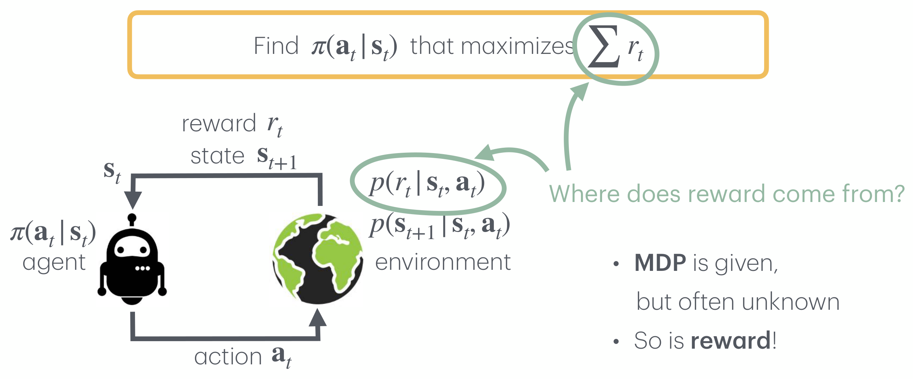
3. 시뮬레이션에서는 (In Simulation)
그렇다면 지금까지 실험에 쓴 시뮬레이션 환경의 보상은 어디에서 왔을까요? 슬라이드는 두 환경의 실제 보상 코드를 보여 줍니다. 둘 다 사람이 짠 것입니다.
3.1 HalfCheetah-v2
8회차 3절에서 본 MuJoCo 과제 가운데 하나로, 2차원 치타 모양의 몸체가 앞으로 달리는 과제입니다. 보상은 세 줄입니다.
reward_ctrl = -0.1 * np.square(action).sum() # 제어 비용: 행동(관절 토크) 성분의 제곱합에 비례하는 벌점
reward_run = (x_pos_after - x_pos_before) / self.dt # 전진 속도: 한 스텝 동안 몸통이 앞으로 간 거리 / 스텝의 시간 간격
reward = reward_ctrl + reward_run몸통의 가로 위치를 \(x_t\), 스텝의 시간 간격을 \(\Delta t\)라 하면 한 스텝의 보상은
\[ r_t = \underbrace{\frac{x_{t+1} - x_t}{\Delta t}}_{\text{전진 속도}} \; \underbrace{-\, 0.1\, \lVert \mathbf{a}_t \rVert^2}_{\text{제어 비용}} \]
입니다. 한 에피소드의 보상을 더하면 첫 항의 중간 위치들이 모두 상쇄됩니다(망원 합, telescoping sum).
\[ \sum_{t=0}^{T-1} r_t = \frac{x_T - x_0}{\Delta t} - 0.1 \sum_{t=0}^{T-1} \lVert \mathbf{a}_t \rVert^2 \]
즉 반환값은 에피소드 동안 간 거리(를 \(\Delta t\)로 나눈 것)에서 쓴 힘의 제곱합의 0.1배를 뺀 것입니다. 계수 0.1은 과제가 정해 주는 값이 아니라 설계자가 고른 값이고, 이 값을 크게 잡을수록 힘을 아끼는 움직임이, 작게 잡을수록 힘을 아끼지 않는 빠른 움직임이 유리해집니다. “빨리 달려라”라는 한 문장이 코드로 옮겨지는 순간 이런 선택이 끼어듭니다.
3.2 LunarLander-v2
착륙선을 두 깃발 사이의 착륙 지점에 내려앉히는 2차원 게임입니다. 보상 코드는 훨씬 깁니다. 주석 가운데 # failure와 # success는 슬라이드에 있던 것이고 나머지는 이 포스트에서 붙인 것이며, 상태 성분의 의미는 gym의 LunarLander 구현을 따른 것으로 슬라이드에는 적혀 있지 않습니다.
reward = 0
shaping = (
-100 * np.sqrt(state[0] * state[0] + state[1] * state[1]) # 착륙 지점까지의 거리: 위치 (x, y)
- 100 * np.sqrt(state[2] * state[2] + state[3] * state[3]) # 속력: 속도 (v_x, v_y)
- 100 * abs(state[4]) # 기체가 기울어진 각도
+ 10 * state[6] # 첫째 다리가 땅에 닿았는가 (0 또는 1)
+ 10 * state[7] # 둘째 다리가 땅에 닿았는가 (0 또는 1)
)
if self.prev_shaping is not None:
reward = shaping - self.prev_shaping # 형성 항은 '이번 값 - 지난 값'으로 준다
self.prev_shaping = shaping
reward -= m_power * 0.30 # 주 엔진 연료 비용
reward -= s_power * 0.03 # 측면 엔진 연료 비용
if self.game_over or abs(state[0]) >= 1.0:
reward = -100 # failure: 몸체가 땅에 부딪히거나 화면 좌우 밖으로 나감
if not self.lander.awake:
reward = +100 # success: 착륙선이 내려앉아 움직임을 멈춤위치를 \((x, y)\), 속도를 \((v_x, v_y)\), 각도를 \(\theta\), 두 다리의 접지 여부를 \(c_1, c_2\)라 하면 shaping은 다음 점수입니다.
\[ \Phi(\mathbf{s}) = -100\sqrt{x^2 + y^2} - 100\sqrt{v_x^2 + v_y^2} - 100\,\lvert\theta\rvert + 10\, c_1 + 10\, c_2 \]
이 점수를 중심으로 구조를 풀어 보면 네 덩어리입니다.
- 형성(shaping) 항 \(\Phi(\mathbf{s})\): 착륙 지점에 가깝고, 느리고, 수평이고, 다리가 땅에 닿아 있을수록 높습니다.
- 보상은 \(\Phi\) 자체가 아니라 \(\Phi\)의 변화량입니다. 첫 스텝을 뺀 모든 스텝에서 형성 항의 몫은 \(\Phi(\mathbf{s}_t) - \Phi(\mathbf{s}_{t-1})\)입니다.
- 연료 비용: 주 엔진 출력에 0.30, 측면 엔진 출력에 0.03을 곱해 뺍니다.
- 종료 보상: 실패(몸체 충돌이나 화면 이탈)면 \(-100\), 성공(내려앉아 멈춤)이면 \(+100\)으로 그 스텝의 보상을 덮어씁니다.
스텝 \(k\)에서 도달한 상태를 \(\mathbf{s}_k\) (\(k = 1, \dots, T\))라 하면, 첫 스텝에는 prev_shaping이 없어 형성 항의 몫이 0이고 이후의 몫은 \(\Phi(\mathbf{s}_k) - \Phi(\mathbf{s}_{k-1})\)입니다. 이를 모두 더하면 중간 항이 상쇄됩니다.
\[ \sum_{k=2}^{T} \big(\Phi(\mathbf{s}_k) - \Phi(\mathbf{s}_{k-1})\big) = \Phi(\mathbf{s}_T) - \Phi(\mathbf{s}_1) \]
형성 항이 반환값에 보태는 몫은 마지막 상태와 첫 상태의 점수 차이뿐입니다(실패나 성공으로 끝나는 마지막 스텝의 보상은 \(\pm 100\)으로 덮어쓰이므로, 정확히는 그 직전 스텝까지의 합입니다). 매 스텝 “착륙 지점에 가까워졌는가, 느려졌는가, 수평에 가까워졌는가”라는 촘촘한 신호를 주면서도, 같은 곳을 맴돌며 형성 항을 거듭 챙겨 반환값을 부풀릴 수는 없게 만든 장치입니다. 이런 형태를 퍼텐셜 기반 보상 형성(potential-based reward shaping)이라 부르며, 할인율을 넣은 형태 \(\gamma\,\Phi(\mathbf{s}') - \Phi(\mathbf{s})\)는 최적 정책을 바꾸지 않는 것으로 알려져 있습니다.
슬라이드 아래의 주황 글씨가 이 절의 결론입니다.
Real-world task rewards are much more complicated! (실세계 과제의 보상은 훨씬 더 복잡하다!)
8차원 상태를 가진 2차원 게임 하나에도 아홉 개의 상수(\(-100\), \(-100\), \(-100\), \(+10\), \(+10\), \(0.30\), \(0.03\), \(-100\), \(+100\))와 두 개의 종료 분기가 들어갔습니다. 카메라 영상을 보고 빨래를 개는 로봇이라면, 이런 코드를 누가 어떻게 짤 수 있을지부터가 문제입니다.
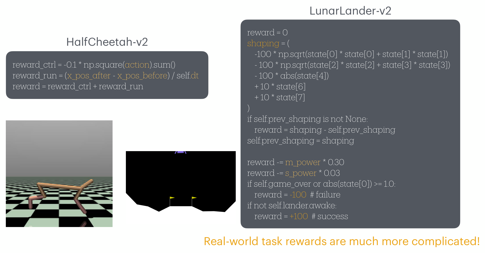
4. 보상은 어디에서 오는가 (Where Do Rewards Come From?)
4.1 게임과 실세계
6쪽은 보상이 저절로 주어지는 곳과 그렇지 않은 곳을 대비합니다.
- 컴퓨터 게임: 화면 위쪽의 점수가 곧 보상입니다. 슬라이드는 아타리 게임 화면의 점수 부분을 주황 상자로 표시하고 “reward”라고 적습니다. 8회차 4절의 아타리 벤치마크가 바로 이 점수를 보상으로 씁니다.
- 실세계 시나리오: 로봇, 대화, 자율주행입니다. 이런 과제에서는 “보상이 무엇인가?”부터가 질문이고, 슬라이드의 답은 “대개 대리 보상(proxy)을 쓴다”(What is the reward? → often use a proxy)입니다.
대리 보상이란 진짜 목표 대신 측정할 수 있는 다른 양을 보상으로 삼는 것입니다. 문제는 강화학습이 최적화하는 것이 진짜 목표가 아니라 대리 보상 그 자체라는 데 있습니다. 대리 보상과 진짜 목표가 어긋나는 곳이 있으면, 최적화는 바로 그곳을 찾아갑니다. 이 걱정은 5.2절에서 학습된 보상의 형태로 다시 나타납니다.
슬라이드 아래쪽의 두 문장이 다음 질문을 던집니다.
Are there other easier ways of providing task supervision? (과제를 알려 줄 더 쉬운 다른 방법이 있을까?) We’ve seen one alternative approach so far (지금까지 대안 하나를 보았다)
그 대안은 1회차의 모방학습입니다. 보상을 정의하는 대신 전문가가 직접 해 보이는 것입니다.
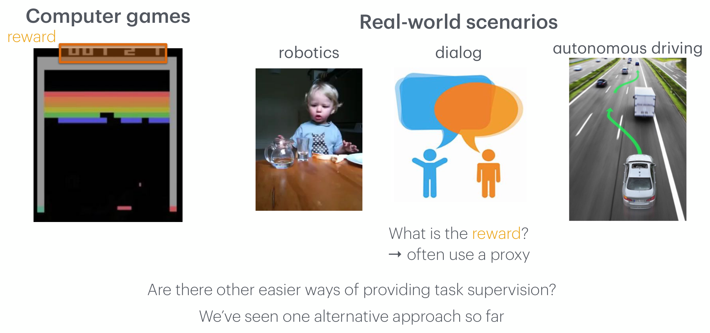
4.2 직접 모방의 한계
7쪽은 그 대안의 한계를 다시 정리합니다. 슬라이드의 불릿은 다음과 같습니다.
- 직접 모방학습(direct imitation learning): 전문가의 행동을 흉내 낸다
- 결과나 동역학에 대한 추론이 없다 (No reasoning about outcomes or dynamics)
- 전문가의 자유도가 다를 수 있다 (The expert might have different degrees of freedom)
- 시연을 제공하는 것이 불가능할 수 있다 (Might not be possible to provide demonstrations)
- 전문가가 무엇을 이루려 하는지 추론할 수 있을까? (Can we reason about what an expert is trying to achieve?)
세 한계를 1회차의 언어로 옮기면 다음과 같습니다.
- 결과와 동역학을 추론하지 않는다: 행동 복제는 “이 상태에서 전문가가 무엇을 했는가”만 배우고, 그 행동이 어떤 결과를 낳는지는 모릅니다. 작은 실수로 전문가가 가 본 적 없는 상태에 들어가면 되돌아오는 법을 모르고, 그것이 1회차 4.1절의 오차 누적과 공변량 이동이었습니다.
- 자유도가 다르다: 사람의 팔과 다섯 손가락의 움직임은 평행 그리퍼를 단 로봇 팔의 행동으로 그대로 옮길 수 없습니다. 행동을 베끼려면 전문가와 에이전트의 행동 공간이 같아야 합니다.
- 시연이 불가능하다: 1회차 3.2절의 사족 보행 로봇처럼, 사람이 시연을 만들어 줄 수 없는 과제가 있습니다.
마지막 불릿의 물음이 방향을 바꿉니다. 전문가가 어떻게(how) 했는지를 베끼는 대신 무엇을(what) 이루려 했는지를 읽어 낼 수 있다면, 곧 전문가의 의도를 보상으로 표현할 수 있다면, 에이전트는 자기 몸과 자기 동역학 위에서 강화학습으로 그 목표를 이룰 수 있습니다. 행동 공간이 달라도 상관없고, 결과를 내다보는 일은 강화학습이 맡습니다. 시연이 아예 없는 경우를 위해서는 시연 대신 성공한 결과의 예시(5절)나 사람의 비교 판단(16절)에서 보상을 얻는 방법이 이어집니다.
슬라이드 오른쪽에는 Stanford CS 224R 강의의 영상(© Warneken & Tomasello)이 들어 있지만, PDF에는 검은 화면으로만 남아 있어 이 포스트에 옮기지 않았습니다. Warneken과 Tomasello는 어린아이가 다른 사람의 목표를 알아차리고 돕는 행동을 연구한 것으로 알려진 학자들로, 영상은 행동이 아니라 의도를 읽어 내는 예로 쓰인 것으로 보입니다.
5. 목표 분류기 (Goal Classifier: Learn to Discern Goal States from Other States)
둘째 부분의 장 구분 슬라이드(8쪽) 제목은 보상 분류기(Reward classifier)입니다. 9–11쪽은 같은 제목 아래에서 가장 단순한 보상 분류기인 목표 분류기(goal classifier)를 세우고, 무너뜨리고, 다시 세웁니다. 부제가 곧 정의입니다. 목표 분류기는 목표 상태를 다른 상태와 구별하도록 배웁니다(learn to discern goal states from other states).
5.1 성공 예시로 분류기 학습하기
예시 과제는 “필통을 공책 뒤에 놓아라”(put pencil case behind notebook)입니다. 이런 과제의 보상 코드를 짜려면 카메라 영상에서 필통과 공책의 위치를 알아내고 “뒤”의 기준까지 정해야 하지만, 성공한 장면의 사진을 몇 장 찍는 것은 쉽습니다. 슬라이드의 절차는 세 단계입니다.
- 성공한 상태와 실패한 상태의 예시를 모은다 (목표 집합 \(G\) 안과 밖의 상태)
- 이진 분류기를 학습한다 (입력은 \(\mathbf{s}_i\), 라벨은 \(\mathbf{1}(\mathbf{s}_i \in G)\))
- 분류기를 보상으로 삼아 강화학습을 돌린다
슬라이드는 분류기에 기호를 붙이지 않으므로, 이 포스트에서는 분류기를 \(C_\psi\)로 적겠습니다. 슬라이드가 뒤에서 데이터 집합을 \(D_+\), \(D_-\), \(D\)로 부르기 때문에, GAN 문헌에서 판별기에 흔히 쓰는 \(D\)는 피했습니다. \(C_\psi(\mathbf{s})\)는 0과 1 사이의 값으로 “상태 \(\mathbf{s}\)가 목표 집합 안에 있을 확률”을 추정하며, 라벨을 \(y_i = \mathbf{1}(\mathbf{s}_i \in G)\)라 할 때 이진 교차 엔트로피를 최소화해, 곧 다음 로그 우도를 최대화해 학습합니다.
\[ \max_{\psi}\; \sum_i \Big[\, y_i \log C_\psi(\mathbf{s}_i) + (1 - y_i) \log\big(1 - C_\psi(\mathbf{s}_i)\big) \Big] \]
그리고 보상을 \(r(\mathbf{s}) = C_\psi(\mathbf{s})\)로 둡니다. 슬라이드의 문장 그대로 분류기의 출력을 보상 신호로 씁니다(Use classifier output as reward signal). 보상 코드를 짜는 대신 성공한 장면과 실패한 장면의 예시만 있으면 되고, 3.2절처럼 상태의 각 성분이 무엇인지 알 필요도 없으며, 입력이 카메라 이미지여도 됩니다.
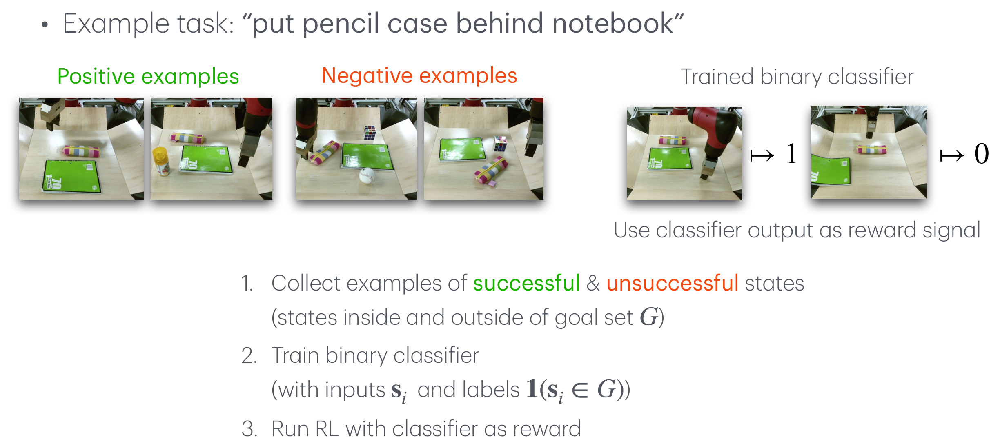
5.2 무엇이 잘못될 수 있는가 (What Can Go Wrong?)
10쪽은 같은 세 단계 아래에 주황 글씨로 “What can go wrong?”(무엇이 잘못될 수 있는가?)을 묻고 답합니다.
The RL algorithm will seek out states that the classifier thinks are good (강화학습 알고리즘은 분류기가 좋다고 여기는 상태를 찾아다닌다)
It may simply find states that the classifier wasn’t trained on! (분류기가 학습하지 않은 상태를 그냥 찾아낼 수도 있다!)
→ Exploiting the classifier’s weaknesses (→ 분류기의 약점을 악용한다)
분류기는 유한한 예시로 학습했으므로, 예시와 닮지 않은 상태에서의 출력은 아무것도 보장되지 않습니다. 강화학습은 \(\sum_t C_\psi(\mathbf{s}_t)\)를 최대화하는 최적화기이고, 성공하려는 것이 아니라 분류기의 출력을 높이려는 것입니다. 그러니 분류기가 우연히 높은 값을 내는 낯선 상태가 하나라도 있으면, 정책은 성공 대신 그 상태를 찾아갑니다. 4.1절에서 말한 “대리 보상과 진짜 목표가 어긋나는 곳”이 학습된 보상에서는 이런 모습으로 나타납니다.
분류기의 오차가 작다는 것은 학습 예시의 분포 \(p_{\text{train}}(\mathbf{s})\) 위에서 평균한 오차가 작다는 뜻입니다. 강화학습이 평가하는 것은 정책이 방문하는 상태의 분포 \(d^{\pi}(\mathbf{s})\) 위의 보상이고, 정책이 바뀌면 \(d^{\pi}\)도 바뀝니다. 게다가 정책은 분포를 아무 방향으로나 바꾸지 않고 분류기 출력이 높은 쪽으로 바꿉니다. 그래서 \(p_{\text{train}}\) 위의 오차가 아무리 작아도, \(d^{\pi}\) 위에서는 정확히 분류기가 틀리는 곳에 확률이 몰릴 수 있습니다. 9회차의 오프라인 강화학습에서 데이터에 없는 행동의 Q 값이 과대추정되고 정책이 바로 그 행동을 고르던 것과 같은 구조입니다. 학습된 함수를 최적화의 표적으로 삼는 순간, 최적화기는 그 함수의 빈틈을 찾는 탐색기가 됩니다.
5.3 방문한 상태를 음성 예시로 (Key Idea)
11쪽 위쪽의 질문은 “강화학습 알고리즘이 분류기의 약점을 악용하지 못하게 막을 수 있을까?”(Can we prevent the RL algorithm from exploiting the classifier’s weaknesses?)이고, 답은 한 줄입니다.
Key idea: Add states that RL visits as negative examples for the classifier (핵심 아이디어: 강화학습이 방문한 상태를 분류기의 음성 예시로 추가한다)
- 성공 상태의 초기 집합 \(D_+\)와 실패 상태의 초기 집합 \(D_-\)를 모은다.
- \(D_+\)와 \(D_-\)로 분류기를 갱신한다.
- 정책 \(\pi\)로 경험 \(\mathbf{s}_t, \mathbf{a}_t, \mathbf{s}_{t+1}, \dots\)을 모은다.
- 분류기 기반 보상으로 정책 \(\pi\)를 갱신한다.
- 방문한 상태를 음성 예시에 더한다: \(D_- \leftarrow D_- \cup \{\mathbf{s}_t, \mathbf{s}_{t+1}, \dots\}\)
- 2로 돌아간다.
출처는 Fu et al., Variational Inverse Control with Events: A General Framework for Data-Driven Reward Definition, NeurIPS 2018입니다.
빈틈이 어떻게 메워지는지 따라가 보겠습니다. 정책이 분류기의 빈틈, 곧 \(\mathbf{s} \notin G\)인데도 \(C_\psi(\mathbf{s})\)가 높은 상태 \(\tilde{\mathbf{s}}\)를 찾아냈다고 합시다. 정책은 \(\tilde{\mathbf{s}}\)를 자주 방문하고(3단계), 5단계에서 \(\tilde{\mathbf{s}}\)가 음성 예시로 들어가며, 다음 2단계에서 분류기는 \(C_\psi(\tilde{\mathbf{s}})\)를 끌어내립니다. 정책이 빈틈을 많이 쓸수록 그 빈틈은 더 빨리 메워집니다. 고정된 분류기를 상대로는 빈틈 찾기가 정책의 이득이었지만, 갱신되는 분류기를 상대로는 빈틈이 오래 남지 않습니다.
5.4 왜 작동하는가, 혹은 왜 작동하지 않는가 (Why Might This Work or Not Work?)
슬라이드 아래쪽은 주황 글씨 “Why might this work or not work?” 아래에 세 개의 질문과 답을 이모지와 함께 둡니다.
| 질문 | 슬라이드의 답 |
|---|---|
| 정확한 분류기를 배울까? (Will it learn an accurate classifier?) | 분류기는 악용될 수 없다 (Classifier can’t be exploited) 😌 |
| 정책이 제대로 작동하리라 기대할 수 있을까? (Do we expect the policy to work?) | 그런데 방문한 상태 가운데 일부가 성공 상태라면? (But, what if some of the visited states are successful?) 😳 |
| 성공 상태에서 분류기는 무엇을 출력할까? (What will the classifier output for successful states?) | 배치의 균형만 맞으면 성공 상태에서 \(p \ge 0.5\)를 출력한다 (As long as batches are balanced, classifier will output \(p \ge 0.5\) for successful states) 😅 |
둘째 질문이 이 방법의 약점처럼 보이는 지점입니다. 정책이 실제로 성공하기 시작하면 성공 상태도 5단계에서 음성 예시로 들어갑니다. 진짜 성공을 “실패”로 가르치는 셈인데, 그러면 분류기가 성공 상태의 보상까지 깎아 버리지 않을까요? 셋째 답이 그렇지 않다고 말합니다. 그 이유를 최적 분류기로 확인해 보겠습니다.
최적 분류기. 학습 배치마다 \(D_+\)와 \(D_-\)에서 같은 수의 예시를 뽑는다고 합시다(균형 배치). \(D_+\)의 상태 분포를 \(p_+(\mathbf{s})\), \(D_-\)의 상태 분포를 \(p_-(\mathbf{s})\)라 하면, 5.1절 목적함수의 기댓값은 다음과 같습니다.
\[ \mathcal{L}(C) = \frac{1}{2}\, \mathbb{E}_{\mathbf{s} \sim p_+}\big[\log C(\mathbf{s})\big] + \frac{1}{2}\, \mathbb{E}_{\mathbf{s} \sim p_-}\big[\log\big(1 - C(\mathbf{s})\big)\big] \]
분류기가 충분히 유연해서 상태마다 값을 따로 고를 수 있다면, 각 \(\mathbf{s}\)에서 \(f(c) = p_+(\mathbf{s}) \log c + p_-(\mathbf{s}) \log(1 - c)\)를 최대화하면 됩니다. \(f'(c) = p_+(\mathbf{s})/c - p_-(\mathbf{s})/(1 - c) = 0\)을 풀면
\[ C^\star(\mathbf{s}) = \frac{p_+(\mathbf{s})}{p_+(\mathbf{s}) + p_-(\mathbf{s})} \]
이고, \(f''(c) = -p_+(\mathbf{s})/c^2 - p_-(\mathbf{s})/(1 - c)^2 < 0\)이므로 이것이 최댓값입니다.
실패 상태에서. \(D_+\)는 성공 상태만 담으므로 \(\mathbf{s} \notin G\)이면 \(p_+(\mathbf{s}) = 0\)이고, 그 상태가 음성 예시에 들어 있어 \(p_-(\mathbf{s}) > 0\)이면 \(C^\star(\mathbf{s}) = 0\)입니다. 어느 쪽 예시에도 없는 상태(\(p_+ = p_- = 0\))에서는 \(C^\star\)가 정해지지 않는데, 5.2절의 빈틈이 바로 이런 곳입니다. 정책이 그런 빈틈을 찾아내 방문하면 5단계에서 음성 예시로 들어오고, 그 순간 보상이 0으로 내려갑니다. 첫째 답 “분류기는 악용될 수 없다”가 이것입니다.
성공 상태에서. \(D_-\) 가운데 성공 상태의 비율을 \(\rho\) (\(0 \le \rho \le 1\))라 하고, 정책이 방문한 성공 상태들이 성공 예시와 비슷하게 분포한다고, 곧 \(\mathbf{s} \in G\)에서 \(p_-(\mathbf{s}) = \rho\, p_+(\mathbf{s})\)라고 두면 다음을 얻습니다.
\[ C^\star(\mathbf{s}) = \frac{p_+(\mathbf{s})}{p_+(\mathbf{s}) + \rho\, p_+(\mathbf{s})} = \frac{1}{1 + \rho} \;\ge\; \frac{1}{2} \qquad (\mathbf{s} \in G) \]
셋째 답의 \(p \ge 0.5\)가 여기서 나옵니다. 성공 상태의 보상은 \(1/2\) 아래로 내려가지 않고 음성 예시에 든 실패 상태의 보상은 0이므로, 성공 상태를 찾아가는 것이 여전히 이득입니다. 다만 이 하한은 균형 배치만으로 나오지 않고 위의 분포 가정에 기댑니다. 정책이 성공 상태의 일부에만 몰려 그곳에서 \(p_-(\mathbf{s}) > p_+(\mathbf{s})\)가 되면 그 상태에서는 \(C^\star(\mathbf{s}) < 1/2\)입니다. 등호는 \(\rho = 1\), 곧 음성 예시가 전부 성공 상태일 때만 성립하는데, 5단계는 \(D_-\)에 더하기만 하고 1단계의 실패 예시를 지우지 않으므로 실제로는 늘 \(\rho < 1\)입니다. 정책이 성공 예시와 같은 분포로 목표에 머무는 반복이 쌓일수록 \(\rho\)는 1에, 출력은 \(1/2\)에 다가가며, 분류기가 정책의 상태와 성공 예시를 더는 구별할 수 없게 되는 이 극한이 7절에서 볼 GAN의 수렴점에 해당합니다.
왜 균형이 필요한가. 균형을 맞추지 않고 데이터 집합의 크기에 비례해 예시를 뽑으면, 양성 예시의 비율 \(\eta_+ = \lvert D_+ \rvert / (\lvert D_+ \rvert + \lvert D_- \rvert)\)가 사전 확률로 들어가 베이즈 정리에 의해 최적 분류기가 다음처럼 바뀝니다.
\[ C^\star(\mathbf{s}) = \frac{\eta_+\, p_+(\mathbf{s})}{\eta_+\, p_+(\mathbf{s}) + (1 - \eta_+)\, p_-(\mathbf{s})} \]
\(D_-\)는 반복마다 방문한 상태로 불어나므로 \(\eta_+ \to 0\)이 되고, 성공 상태가 \(D_-\)에 섞여 있는 한(\(\rho > 0\)) 성공 상태에서의 출력도 0으로 끌려 내려갑니다. 균형 배치는 사전 확률을 \(1/2\)로 고정해 이 효과를 없앱니다. 슬라이드의 조건 “배치의 균형만 맞으면”(as long as batches are balanced)이 붙은 이유입니다.
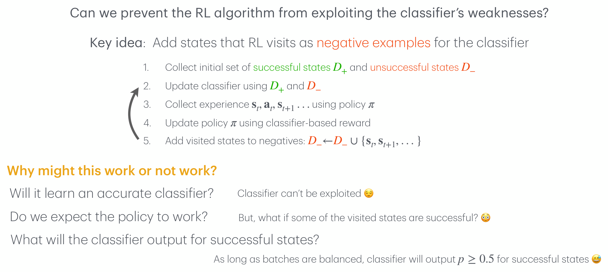
6. 로봇 강화학습을 위한 목표 분류기 (Goal Classifiers for Robotic RL)
12쪽은 이 방법을 실제 로봇에 쓴 사례입니다(출처: Sharma et al., Self-Improving Robots: End-to-End Autonomous Visuomotor Reinforcement Learning, CoRL 2023). 슬라이드의 불릿은 다음과 같습니다.
- 시연 50개를 모은다 (Collect 50 demonstrations)
- 마지막 상태를 성공 상태 예시로 써서 이진 분류기를 학습한다 (Use final states as success state examples → train a binary classifier)
- 강화학습의 재생 버퍼를 시연으로 초기화한다 (Initialize RL reply buffer with demos)
슬라이드의 “reply buffer”는 6회차 10절의 재생 버퍼(replay buffer)를 잘못 적은 것으로 보입니다. 같은 시연 50개를 두 가지 방식으로 쓴 결과를 비교하면 다음과 같습니다.
| 방법 | 시연을 쓰는 방식 | 성공률 |
|---|---|---|
| 시연을 직접 모방 (Directly imitating demos) | 시연의 행동을 그대로 흉내 낸다 | 26% |
| 학습된 분류기로 강화학습 (RL trained with learned classifier) | 시연의 마지막 상태는 목표 분류기의 양성 예시로, 시연 전체는 재생 버퍼의 초기 데이터로 쓴다 | 62% |
두 가지를 짚어 둘 만합니다.
- 성공 예시를 따로 모을 필요가 없습니다. 시연은 성공으로 끝나므로, 시연의 마지막 상태가 곧 5.1절의 성공 예시입니다. 시연 하나가 행동 데이터와 목표 예시를 동시에 줍니다.
- 같은 시연 50개에서 출발해 성공률이 두 배 넘게 오릅니다. 다만 강화학습 쪽은 시연에 더해 로봇이 직접 모은 경험도 씁니다. 슬라이드는 이유를 따로 적지 않지만, 4.2절의 관점에서 읽으면 모방한 정책은 전문가가 가 보지 않은 상태에서 되돌아오는 법을 모르는 반면, 분류기 보상으로 강화학습을 한 정책은 자기 실수를 직접 겪으며 “마지막 장면이 성공처럼 보이는가”를 기준으로 개선됩니다. 재생 버퍼를 시연으로 채워 두면 초기 탐험의 부담도 덜 수 있습니다.
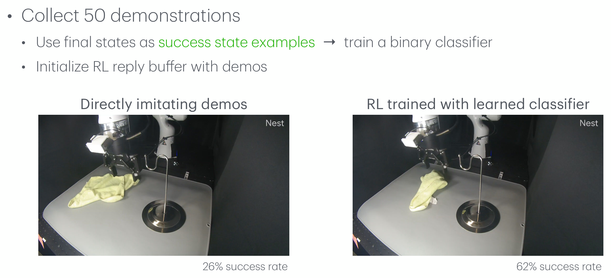
7. 여담: 생성적 적대 신경망 (Aside: Generative Adversarial Networks)
13쪽은 잠시 강화학습을 벗어나, 5.3절의 절차가 이미 잘 알려진 다른 방법과 똑같다고 말합니다.
- 이것이 바로 GAN이 작동하는 방식이다! (This is how exactly GANs work!)
- 분류기를 학습해 실제 데이터와 생성된 데이터를 구별하게 한다.
- 생성기를 학습해 분류기가 실제라고 여기는 데이터를 만들게 한다.
슬라이드는 둘째 하위 불릿의 “generator”와 “classifier”에 주황 밑줄을 긋고 각각 “~ policy”, “~ goal classifier”라고 적습니다. 생성적 적대 신경망(generative adversarial network, GAN)의 생성기가 5.3절의 정책에, GAN의 분류기(판별기)가 목표 분류기에 대응한다는 뜻입니다.
| GAN | 5.3절의 목표 분류기 |
|---|---|
| 실제 데이터 \(x \sim p_{\text{data}}\) | 성공 예시 \(D_+\) |
| 생성기 \(g\)가 만든 데이터 \(x \sim p_g\) | 정책이 방문한 상태 (5단계에서 \(D_-\)에 추가) |
| 분류기: 실제와 생성을 구별하도록 학습 | 목표 분류기: \(D_+\)와 \(D_-\)를 구별하도록 학습 (2단계) |
| 생성기: 분류기를 속이도록 학습 | 정책: 분류기 기반 보상을 최대화하도록 학습 (4단계) |
슬라이드의 예시는 VQ-GAN이 만든 “요크셔테리어” 이미지 세 장(출처: Yu et al., ViT-VQGAN, ICLR’22)과, GAN 손실을 쓰는 Phenaki의 영상 생성(출처: Villegas et al., Phenaki, ICLR’23)입니다. Phenaki 옆에는 한 영상을 이어 만드는 문장들이 적혀 있습니다 — 화성의 웅덩이를 걸어가는 우주비행사를 옆에서 본 모습, 화성에서 춤추는 우주비행사, 화성에서 개를 산책시키는 우주비행사, 불꽃놀이를 보는 우주비행사와 개.
슬라이드 맨 아래의 문장이 이 절의 핵심입니다.
At convergence: generator will match data distribution \(p(x)\) (수렴점에서 생성기는 데이터 분포 \(p(x)\)와 같아진다)
슬라이드에는 식이 없지만, 이 문장이 어디에서 오는지는 표준적인 유도로 확인할 수 있습니다.
분류기를 \(C\), 생성기가 만드는 데이터의 분포를 \(p_g\)라 하면 GAN은 다음 최소–최대 문제를 풉니다.
\[ \min_{g}\; \max_{C}\; V(C, g) = \mathbb{E}_{x \sim p_{\text{data}}}\big[\log C(x)\big] + \mathbb{E}_{x \sim p_{g}}\big[\log\big(1 - C(x)\big)\big] \]
1단계 (최적 분류기). 안쪽의 최대화는 5.4절의 균형 배치 목적함수와 같은 꼴이므로(상수배 \(1/2\)만 다릅니다), \(p_+ = p_{\text{data}}\), \(p_- = p_g\)를 넣으면 \(C^\star(x) = p_{\text{data}}(x) / \big(p_{\text{data}}(x) + p_g(x)\big)\)입니다.
2단계 (대입). 두 분포의 평균 \(m = (p_{\text{data}} + p_g)/2\)를 쓰면 \(C^\star = p_{\text{data}} / (2m)\), \(1 - C^\star = p_g / (2m)\)이므로
\[ \begin{aligned} V(C^\star, g) &= \mathbb{E}_{p_{\text{data}}}\Big[\log \frac{p_{\text{data}}}{m}\Big] + \mathbb{E}_{p_g}\Big[\log \frac{p_g}{m}\Big] - 2\log 2 \\ &= \mathrm{KL}(p_{\text{data}} \,\|\, m) + \mathrm{KL}(p_g \,\|\, m) - \log 4 \\ &= 2\,\mathrm{JSD}(p_{\text{data}} \,\|\, p_g) - \log 4 \end{aligned} \]
입니다. 마지막 줄은 옌센–섀넌 발산(Jensen–Shannon divergence)의 정의 \(\mathrm{JSD}(p \,\|\, q) = \tfrac{1}{2}\mathrm{KL}(p \,\|\, m) + \tfrac{1}{2}\mathrm{KL}(q \,\|\, m)\)입니다.
3단계 (수렴점). JSD는 0 이상이고 두 분포가 같을 때만 0이므로, 생성기의 최선은 \(p_g = p_{\text{data}}\)이며 그때 \(V = -\log 4\), \(C^\star(x) = 1/2\)입니다. 분류기가 실제와 생성을 전혀 구별하지 못하는 상태입니다.
목표 분류기에 옮기면, 수렴점에서 정책이 방문하는 상태의 분포가 성공 예시의 분포와 같아지고 분류기 출력은 \(1/2\)이 됩니다. 5.4절에서 성공 상태의 출력 \(1/(1+\rho)\)가 \(\rho \to 1\)일 때 \(1/2\)로 가던 것과 같은 그림입니다.
GAN의 생성기는 신경망이므로 분류기 출력의 기울기가 \(x = g(z)\)를 거쳐 생성기의 파라미터까지 역전파됩니다. 목표 분류기에서 “생성기” 역할을 하는 것은 정책 그리고 환경입니다. 상태 \(\mathbf{s}_{t+1}\)은 알 수 없는 전이 확률 \(p(\mathbf{s}_{t+1} \mid \mathbf{s}_t, \mathbf{a}_t)\)에서 나오고, 3회차 3절에서 본 것처럼 환경은 미분할 수 없는 블랙박스입니다. 그래서 분류기의 기울기를 정책으로 흘려보낼 수 없고, 대신 분류기의 출력값을 보상으로 넘겨 강화학습으로 정책을 갱신합니다. 같은 적대적 구조를 미분 대신 보상으로 푸는 셈입니다. 다만 5.1절처럼 \(C\)를 그대로 보상으로 쓰면 정책이 최대화하는 양은 위 \(V\)에서 생성기가 줄이는 항 \(\mathbb{E}_{x \sim p_g}\big[\log\big(1 - C(x)\big)\big]\)에 대응하지 않으므로, 생성기와 똑같은 목적함수를 주려면 보상을 \(-\log\big(1 - C\big)\)로 두어야 합니다.
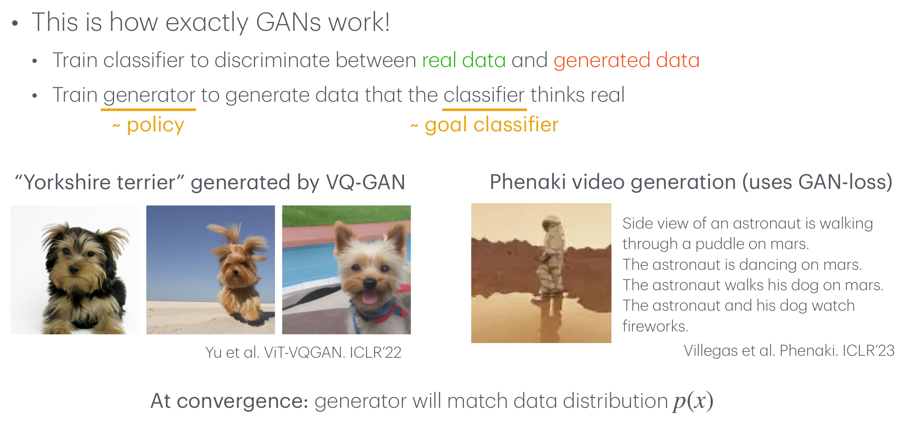
8. 상태–행동 쌍을 가르는 분류기: GAIL (From Goal Classifier to More General Rewards)
14쪽은 목표 분류기의 전제를 문제 삼습니다.
What if you are NOT trying to reach a goal? — We want more general rewards (목표에 도달하려는 것이 아니라면? — 더 일반적인 보상이 필요하다)
달리기, 춤, 공 던지기처럼 어떤 상태에 도달하는 것이 아니라 어떻게 움직이는지가 과제인 경우가 많습니다. 이때 쓸 수 있는 것은 성공 장면이 아니라 전문가의 시연 전체입니다.
- 주어진 것(Given): 전문가 \(\pi_{\text{expert}}\)의 시연 궤적 \(D := \{(\mathbf{s}_1, \mathbf{a}_1, \dots)_i\}\)
- 목표(Goal): 전문가의 상태–행동 분포 \(d^{\pi_{\text{expert}}}(\mathbf{s}, \mathbf{a})\)를 맞춘다
슬라이드는 \(d^{\pi}\)를 따로 정의하지 않습니다. 정책 \(\pi\)를 실행할 때 상태–행동 쌍이 나타나는 빈도를 시점에 대해 평균한 분포로 읽으면 됩니다. 지평이 \(T\)인 에피소드라면 다음과 같습니다.
\[ d^{\pi}(\mathbf{s}, \mathbf{a}) = \frac{1}{T} \sum_{t=1}^{T} p_\pi(\mathbf{s}_t = \mathbf{s}, \mathbf{a}_t = \mathbf{a}) = d^{\pi}(\mathbf{s})\, \pi(\mathbf{a} \mid \mathbf{s}) \]
마지막 등호의 \(d^{\pi}(\mathbf{s})\)는 같은 방식으로 정의한 상태 분포이고, 1회차 4.1절에서 공변량 이동을 말할 때 쓴 “정책이 방문하는 상태 분포”가 이것입니다.
슬라이드의 답은 “앞과 같은 알고리즘을 쓰면 된다!”(We can use the same algorithm as before!)이고, 바뀌는 것은 분류 대상뿐입니다.
| 목표 분류기 (5.3절) | GAIL | |
|---|---|---|
| 주어진 것 | 성공 상태 \(D_+\) | 전문가의 시연 궤적 \(D\) |
| 분류 대상 | 상태 \(\mathbf{s}\) | 상태–행동 쌍 \((\mathbf{s}, \mathbf{a})\) |
| 양성 예시 | 성공 상태 | 시연 \(D\)의 모든 \((\mathbf{s}_t, \mathbf{a}_t)\) |
| 음성 예시 | 정책이 방문한 상태 | 정책이 강화학습 중에 모은 \((\mathbf{s}_t, \mathbf{a}_t)\) |
| 맞추는 분포 | 성공 상태의 분포 | \(d^{\pi_{\text{expert}}}(\mathbf{s}, \mathbf{a})\) |
슬라이드 오른쪽의 다섯 단계는 5.3절과 글자까지 같고, 주황 주석 두 개만 붙어 있습니다. 2단계의 “classifier”에 동그라미를 치고 “classify \((\mathbf{s}, \mathbf{a})\)”라고 적었고, 5단계의 \(\{\mathbf{s}_t, \mathbf{s}_{t+1}, \dots\}\)에 동그라미를 치고 화살표로 \(\{(\mathbf{s}_t, \mathbf{a}_t), (\mathbf{s}_{t+1}, \mathbf{a}_{t+1}), \dots\}\)로 바꾸어 놓았습니다. 이 방법의 이름이 생성적 적대 모방학습(Generative Adversarial Imitation Learning, GAIL)입니다(출처: Ho et al., Generative Adversarial Imitation Learning, NIPS 2016).
분류기 출력을 보상으로 바꾸는 구체적인 식은 슬라이드에 없습니다. 5.1절처럼 출력 \(C_\psi(\mathbf{s}, \mathbf{a})\)를 그대로 쓰든 그 로그를 쓰든, 전문가의 것처럼 보일수록 보상이 크다는 점이 핵심입니다.
8.1 “BC와 조금 다르다”
목표 문장의 “expert state-action distribution”에 주황 밑줄을 긋고 슬라이드는 “BC와 조금 다르다”(slightly different from BC)라고 적습니다. 1회차 2절의 행동 복제도 같은 시연을 쓰는데, 무엇이 다를까요?
모든 \((\mathbf{s}, \mathbf{a})\)에서 \(d^{\pi}(\mathbf{s}, \mathbf{a}) = d^{\pi_{\text{expert}}}(\mathbf{s}, \mathbf{a})\)가 성립한다고 합시다.
- 상태 분포가 같아집니다. 양변을 \(\mathbf{a}\)에 대해 더하면 \(d^{\pi}(\mathbf{s}) = \sum_{\mathbf{a}} d^{\pi}(\mathbf{s}, \mathbf{a}) = \sum_{\mathbf{a}} d^{\pi_{\text{expert}}}(\mathbf{s}, \mathbf{a}) = d^{\pi_{\text{expert}}}(\mathbf{s})\)입니다.
- 전문가가 가는 상태에서 행동 선택이 같아집니다. \(d^{\pi_{\text{expert}}}(\mathbf{s}) > 0\)인 모든 \(\mathbf{s}\)에서 \(\pi(\mathbf{a} \mid \mathbf{s}) = d^{\pi}(\mathbf{s}, \mathbf{a}) / d^{\pi}(\mathbf{s}) = d^{\pi_{\text{expert}}}(\mathbf{s}, \mathbf{a}) / d^{\pi_{\text{expert}}}(\mathbf{s}) = \pi_{\text{expert}}(\mathbf{a} \mid \mathbf{s})\)입니다.
행동 복제의 목적함수는
\[ \max_{\pi}\; \mathbb{E}_{(\mathbf{s}, \mathbf{a}) \sim d^{\pi_{\text{expert}}}}\big[\log \pi(\mathbf{a} \mid \mathbf{s})\big] \]
이고, 이는 다음과 같습니다.
\[ \min_{\pi}\; \mathbb{E}_{\mathbf{s} \sim d^{\pi_{\text{expert}}}}\Big[\mathrm{KL}\big(\pi_{\text{expert}}(\cdot \mid \mathbf{s}) \,\|\, \pi(\cdot \mid \mathbf{s})\big)\Big] \]
\(\mathrm{KL}\big(\pi_{\text{expert}}(\cdot \mid \mathbf{s}) \,\|\, \pi(\cdot \mid \mathbf{s})\big) = \mathbb{E}_{\mathbf{a} \sim \pi_{\text{expert}}}\big[\log \pi_{\text{expert}}(\mathbf{a} \mid \mathbf{s}) - \log \pi(\mathbf{a} \mid \mathbf{s})\big]\)이고 첫 항은 \(\pi\)와 무관하기 때문입니다. 행동 복제가 맞추는 것은 위 상자의 2번, 곧 전문가가 방문한 상태에서의 행동 선택뿐입니다. 기댓값이 전문가의 상태 분포 위에서만 계산되므로, 1번의 정책 자신이 방문하는 상태 분포는 목적함수에 아예 등장하지 않습니다. 정책이 전문가가 가지 않는 상태로 흘러가도 행동 복제의 손실은 그것을 모르고, 이것이 1회차 4.1절의 공변량 이동입니다.
GAIL의 음성 예시는 정책이 실제로 방문한 \((\mathbf{s}, \mathbf{a})\)입니다. 정책이 전문가가 가지 않는 상태로 흘러가면 분류기가 그 쌍을 “전문가답지 않다”고 판정해 보상이 낮아지므로, 정책은 전문가처럼 행동하는 동시에 전문가가 가는 상태에 머무는 법도 배웁니다. 7절의 유도를 \(x = (\mathbf{s}, \mathbf{a})\)로 옮기면, 정책의 보상을 \(V\)의 생성기 쪽 항에 맞춰 \(r(\mathbf{s}, \mathbf{a}) = -\log\big(1 - C_\psi(\mathbf{s}, \mathbf{a})\big)\)로 둘 때 분류기가 최적이면 정책이 줄이는 것은 \(\mathrm{JSD}\big(d^{\pi_{\text{expert}}} \,\|\, d^{\pi}\big)\)입니다. 이 보상은 GAIL 논문이 정책의 비용으로 쓰는 형태를 이 포스트의 기호로 옮긴 것이며, 슬라이드에는 없습니다. 앞에서 든 \(C_\psi\)나 \(\log C_\psi\)를 그대로 보상으로 쓰면 정책이 줄이는 양은 JSD가 아닙니다. 같은 시연을 쓰지만 행동 복제는 조건부 분포 \(\pi(\mathbf{a} \mid \mathbf{s})\)를, GAIL은 결합 분포 \(d^{\pi}(\mathbf{s}, \mathbf{a})\)를 맞춘다는 것이 “조금 다르다”의 내용입니다.
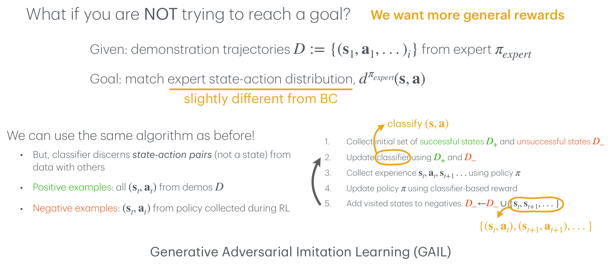
9. GAIL 벤치마크 결과 (GAIL Benchmark Results)
15쪽은 GAIL 논문의 결과 그래프입니다(출처: Ho et al., NIPS 2016). 여덟 개의 과제 — Cartpole, Acrobot, Mountain Car, HalfCheetah(윗줄), Hopper, Walker, Ant, Humanoid(아랫줄) — 마다 가로축은 시연 데이터셋의 궤적 수(Number of trajectories in dataset), 세로축은 척도를 맞춘 성능(Performance (scaled))입니다. 남색 점선 Expert가 1.0, 초록 점선 Random이 0.0에 그어져 있어, 세로축은 무작위 정책을 0, 전문가를 1로 맞춘 성능으로 읽힙니다.
비교하는 방법은 넷입니다. Behavioral cloning(주황, 네모)은 1회차의 행동 복제이고, Ours(파랑, 별)가 GAIL입니다. FEM(분홍, 동그라미)과 GTAL(노랑, 마름모)은 GAIL 논문이 비교한 두 도제 학습(apprenticeship learning) 기준선으로, 각각 feature expectation matching과 game-theoretic apprenticeship learning을 줄인 말입니다. 행동 복제와 GAIL의 값을 그래프에서 대략 읽으면 다음과 같습니다.
| 과제 | 궤적 수 | 행동 복제 | GAIL |
|---|---|---|---|
| Cartpole | 1, 4, 7, 10 | 약 0.3 → 0.8 → 0.9 → 0.9 | 모두 약 1.0 |
| Acrobot | 1, 4, 7, 10 | 약 0.5 → 0.8 → 0.8 → 0.8 | 약 0.9–1.0 |
| Mountain Car | 1, 4, 7, 10 | 약 0.6 → 0.7 → 0.7 → 0.8 | 모두 약 1.0 |
| HalfCheetah | 4, 11, 18, 25 | 약 0.0 → 0.2 → 0.6 → 0.8 | 약 1.0 |
| Hopper | 4, 11, 18, 25 | 약 0.0 → 0.3 → 0.5 → 0.9 | 모두 약 1.0 |
| Walker | 4, 11, 18, 25 | 약 0.0 → 0.9 → 0.2 → 0.2 | 약 0.7 → 1.0 → 1.0 → 1.0 |
| Ant | 4, 11, 18, 25 | 약 0.4 → 0.7 → 0.6 → 0.8 | 약 0.8 → 0.8 → 0.7 → 1.0 |
| Humanoid | 80, 160, 240 | 약 0.1 → 0.4 → 0.6 | 모두 약 1.1 |
- GAIL은 가장 적은 궤적 수에서도 거의 전문가 수준입니다. 1.0에 못 미치는 곳은 Walker의 4개(약 0.7), Ant의 4–18개(약 0.7–0.8) 정도이고, HalfCheetah와 Humanoid에서는 1을 조금 넘는 점도 있습니다.
- 행동 복제는 데이터가 많아야 따라옵니다. Hopper는 4개에서 약 0이던 성능이 25개에서야 약 0.9가 되고, Humanoid는 240개를 써도 약 0.6입니다. Walker에서는 11개에서 약 0.9였다가 18개 이후 약 0.2로 떨어져 데이터 수에 따라 크게 흔들립니다.
- 두 도제 학습 기준선은 과제에 따라 들쭉날쭉합니다. Ant에서는 FEM과 GTAL이 모두 음수(약 −0.5 – −1.5), 곧 무작위 정책보다도 못한 성능입니다.
슬라이드 아래의 두 줄이 결론과 대가입니다.
GAIL is more demonstration-efficient than BC! (GAIL은 행동 복제보다 시연 효율적이다!)
− Requires real-world interactions for RL (− 강화학습을 위해 실제 환경과의 상호작용이 필요하다)
8.1절에서 본 대로, 행동 복제는 공변량 이동을 데이터의 양으로 메울 수밖에 없지만 GAIL은 정책 자신의 상태 분포를 직접 교정하므로 같은 성능에 훨씬 적은 시연이 듭니다. 대신 그 교정에는 정책을 환경에서 실행하는 상호작용이 필요합니다. 8회차 1.3절의 표본 효율이 환경과의 상호작용 수를 잰다면 여기서의 시연 효율은 전문가 시연의 수를 재며, GAIL은 시연을 아끼는 대신 상호작용을 씁니다. 시뮬레이션에서는 싼 상호작용이 실제 로봇에서는 비싸고 위험할 수 있다는 점이 빨간 글씨의 단서입니다.
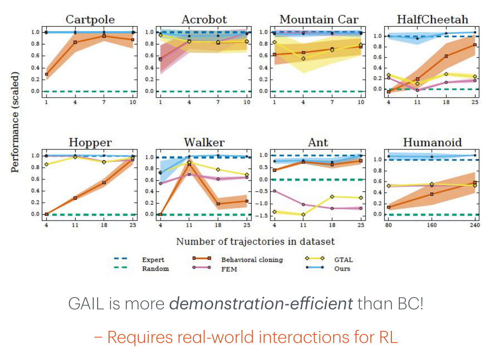
10. 상태 전이를 가르는 분류기: GAIfO (From Goal Classifier to More General Rewards)
16쪽은 같은 제목 아래 한 걸음 더 나갑니다.
What if demos do NOT have expert actions? (시연에 전문가의 행동이 없다면?)
사람이 걷는 영상, 동물의 움직임을 담은 모션 캡처, 다른 몸을 가진 전문가의 시연에는 행동이 없거나, 있어도 에이전트의 행동 공간과 맞지 않습니다. 4.2절의 “전문가의 자유도가 다를 수 있다”가 바로 이 상황입니다.
- 주어진 것: 전문가 \(\pi_{\text{expert}}\)의 상태만 있는(state-only) 시연 궤적 \(D := \{(\mathbf{s}_1, \mathbf{s}_2, \dots)_i\}\)
- 목표: 전문가의 상태 분포 \(d^{\pi_{\text{expert}}}(\mathbf{s})\)를 맞춘다
알고리즘은 이번에도 같고, 분류기가 상태 전이(state transitions)를 구별합니다.
- 양성 예시: 시연 \(D\)의 모든 \((\mathbf{s}_t, \mathbf{s}_{t+1})\)
- 음성 예시: 정책이 강화학습 중에 모은 \((\mathbf{s}_t, \mathbf{s}_{t+1})\)
슬라이드의 주석도 14쪽과 같은 자리에서 “classify \((\mathbf{s}, \mathbf{s}')\)”와 \(\{(\mathbf{s}_t, \mathbf{s}_{t+1}), (\mathbf{s}_{t+1}, \mathbf{s}_{t+2}), \dots\}\)로 바뀝니다. 이 방법이 관측으로부터의 생성적 적대 모방(Generative Adversarial Imitation from Observation, GAIfO)입니다(출처: Torabi et al., Generative Adversarial Imitation from Observation, arXiv 2018).
10.1 왜 상태 하나가 아니라 상태 전이인가
목표가 상태 분포라면 상태 \(\mathbf{s}\) 하나를 분류하면 될 것 같은데, 슬라이드는 쌍 \((\mathbf{s}, \mathbf{s}')\)를 분류합니다. 두 가지로 읽을 수 있습니다.
첫째, 전이 분포를 맞추면 상태 분포는 저절로 맞춰집니다. 전이의 분포를 8절과 같은 방식으로 \(d^{\pi}(\mathbf{s}, \mathbf{s}') = \frac{1}{T} \sum_{t=1}^{T} p_\pi(\mathbf{s}_t = \mathbf{s}, \mathbf{s}_{t+1} = \mathbf{s}')\)로 두고 다음 상태에 대해 더하면 상태 분포가 됩니다.
\[ \sum_{\mathbf{s}'} d^{\pi}(\mathbf{s}, \mathbf{s}') = d^{\pi}(\mathbf{s}) \]
따라서 \(d^{\pi}(\mathbf{s}, \mathbf{s}') = d^{\pi_{\text{expert}}}(\mathbf{s}, \mathbf{s}')\)이면 슬라이드의 목표 \(d^{\pi}(\mathbf{s}) = d^{\pi_{\text{expert}}}(\mathbf{s})\)는 따라옵니다. 8.1절에서 결합 분포가 주변 분포를 결정하던 것과 같은 논리입니다.
둘째, 상태 전이는 행동의 효과를 담습니다. 같은 자세들을 지나더라도 앞으로 걷는 것과 뒤로 걷는 것은 자세의 순서가 다릅니다. 상태 하나만 보는 분류기는 둘을 구별할 수 없지만, \((\mathbf{s}_t, \mathbf{s}_{t+1})\)은 “이 자세에서 어느 자세로 넘어가는가”를 보므로 움직임의 방향과 속도를 구별합니다. 행동을 직접 보지 않아도 행동이 상태를 어떻게 바꾸었는지는 볼 수 있습니다.
에이전트는 여전히 자기 행동 공간에서 행동합니다. 분류기는 상태의 변화만 보므로, 전문가와 몸이 달라도 같은 상태 변화를 만들어 낼 수만 있으면 보상을 받습니다.
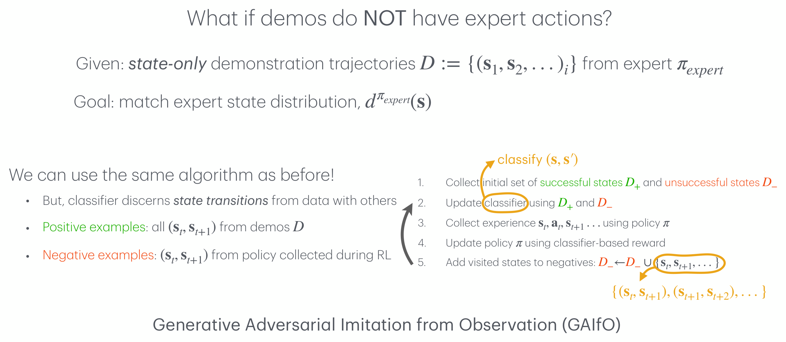
11. 모션 클립 데이터 위의 GAIfO (GAIfO on Motion Clip Data)
17쪽은 GAIfO의 대표적인 쓰임새를 영상 한 장면으로 보여 줍니다(출처: Peng et al., AMP: Adversarial Motion Priors for Stylized Physics-Based Character Control, SIGGRAPH 2021, 프로젝트 페이지 xbpeng.github.io/projects/AMP/).
모션 캡처로 얻은 모션 클립은 사람의 몸이 시간에 따라 어떤 자세를 지나는지, 곧 상태의 열만 담고 있고 관절에 어떤 토크를 주었는지는 담고 있지 않습니다. 10절의 “상태만 있는 시연”이 정확히 이것입니다. 물리 시뮬레이션 속의 캐릭터는 자기 관절 토크로 움직여야 하므로, 모션 클립의 상태 전이를 양성 예시로 삼는 분류기가 “사람의 움직임처럼 보이는가”를 판정하고 그 출력이 보상이 됩니다. 제목의 “motion prior”는 이 분류기가 움직임의 자연스러움에 대한 사전 지식 역할을 한다는 뜻으로 읽히고, 그림의 캐릭터는 울퉁불퉁한 지형과 장애물이 있는 길을 달리는 과제를 하고 있습니다. 14절의 VIPER 결과에서 비교 대상으로 다시 나오는 AMP가 이 방법입니다.
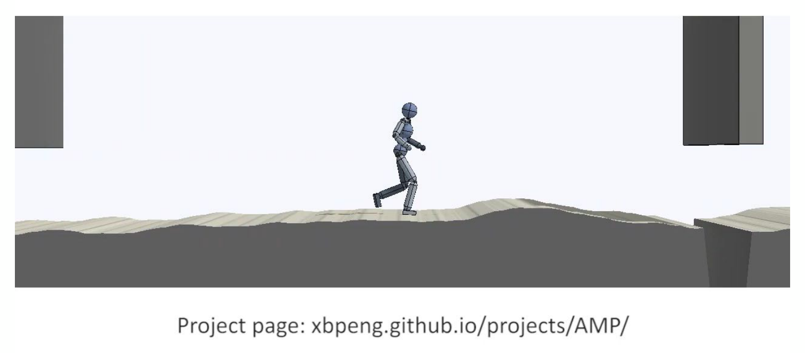
12. 더 발전된 GAIfO (More Advanced GAIfO)
18쪽은 사진 한 장과 출처 하나뿐입니다(출처: Unitree Robotics, https://www.youtube.com/watch?v=eQpyvR-B7hc). 붉은 조끼를 입은 수십 대의 휴머노이드 로봇이 전통 건축물 앞 광장에서 같은 동작을 맞춰 하고 있습니다.
슬라이드는 이 영상의 로봇이 어떤 방법으로 학습되었는지 밝히지 않고 “More advanced GAIfO”라는 제목만 붙입니다. 11절의 모션 클립 데이터처럼 사람의 움직임을 담은 상태 데이터를, 시뮬레이션 캐릭터가 아니라 실제 휴머노이드 로봇이 따라 하게 만드는 방향의 최근 사례로 제시된 것으로 읽힙니다.
13. 비디오 예측 모델을 보상으로: VIPER (From Goal Classifier to More General Rewards)
19쪽은 같은 제목의 세 번째 슬라이드입니다.
Can we provide more temporally consistent rewards? (시간적으로 더 일관된 보상을 줄 수 있을까?)
GAIfO의 분류기는 한 번에 한 쌍 \((\mathbf{s}_t, \mathbf{s}_{t+1})\)만 봅니다. 하나하나는 그럴듯한 전이들이 모여도, 길게 이어 보면 전문가의 움직임과 다른 흐름이 될 수 있습니다. 그래서 목표가 한 단계 더 강해집니다.
- 주어진 것: 전문가 \(\pi_{\text{expert}}\)의 상태만 있는 시연 궤적 \(D := \{(\mathbf{s}_1, \mathbf{s}_2, \dots)_i\}\)
- 목표: 전문가의 궤적 분포 \(d^{\pi_{\text{expert}}}(\mathbf{s}_1, \mathbf{s}_2, \dots)\)를 맞춘다. 상태 분포 \(d^{\pi_{\text{expert}}}(\mathbf{s})\)가 아니다.
궤적 분포는 상태들이 어떤 순서로 이어지는지까지 담습니다. 상태 분포가 같아도 궤적 분포는 다를 수 있습니다. 상태 분포는 궤적 분포에서 각 시점의 주변 분포를 꺼내 시간에 대해 평균한 것(8절의 \(d^{\pi}(\mathbf{s})\))이어서, 상태들이 이어지는 순서에 대한 정보를 담지 않기 때문입니다.
슬라이드의 답은 분류기 대신 비디오 예측 모델을 보상으로 쓰자(We can use video prediction models as rewards!)는 것입니다.
- 비디오 예측 모델은 궤적의 우도를 학습한다 (Video prediction model learns likelihood of trajectories).
- 궤적의 우도: \(\log p_\theta(\mathbf{s}_{1:t}) = \sum \log p_\theta(\mathbf{s}_t \mid \mathbf{s}_{1:t-1})\)
- 비디오 모델의 다음 토큰 우도를 보상으로 쓴다: \(p_\theta(\mathbf{s}_{t+1} \mid \mathbf{s}_{1:t})\)
- 비디오 예측 모델은 어떤 전문가 영상으로도 학습할 수 있다!
여기서 “모델”은 신경망 생성 모델이라는 뜻입니다. 10회차의 동역학 모형 \(p(\mathbf{s}_{t+1} \mid \mathbf{s}_t, \mathbf{a}_t)\)와 달리 행동을 입력으로 받지 않고, 환경이 아니라 전문가 영상의 분포를 흉내 냅니다.
- 전문가 영상으로 비디오 예측 모델 \(p_\theta(\mathbf{s}_{t+1} \mid \mathbf{s}_{t-k:t})\)를 학습한다.
- 행동 \(\mathbf{a}_t \sim \pi(\mathbf{s}_t)\)를 고른다.
- 보상을 채운다: \(r_t = p_\theta(\mathbf{s}_{t+1} \mid \mathbf{s}_{t-k:t})\)
- 이 비디오 예측 보상으로, 아무 강화학습 알고리즘이나 써서 정책 \(\pi\)를 학습한다.
- 2로 돌아간다.
방법의 이름은 비디오 예측 보상(Video Prediction Rewards, VIPER)입니다(출처: Escontrela et al., Video Prediction Models as Reward for Reinforcement Learning, NeurIPS 2023). 슬라이드의 주황 주석은 1단계의 \(p_\theta(\mathbf{s}_{t+1} \mid \mathbf{s}_{t-k:t})\)에 동그라미를 치고 “classify \((\mathbf{s}_1, \dots, \mathbf{s}_t, \mathbf{s}_{t+1})\)”라고 적습니다. 5–10절의 분류기가 상태 하나, 상태–행동 쌍, 상태 전이를 판정했다면, 이번에는 지나온 궤적 전체에 비추어 다음 상태가 그럴듯한가를 판정한다는 뜻입니다.
13.1 보상의 합이 궤적의 로그 우도가 되는 이유
슬라이드의 둘째 불릿은 확률의 연쇄 법칙입니다. 결합 확률을 조건부 확률의 곱으로 쪼개고 로그를 취하면 다음과 같습니다.
\[ p_\theta(\mathbf{s}_{1:T}) = p_\theta(\mathbf{s}_1) \prod_{t=1}^{T-1} p_\theta(\mathbf{s}_{t+1} \mid \mathbf{s}_{1:t}) \]
\[ \log p_\theta(\mathbf{s}_{1:T}) = \log p_\theta(\mathbf{s}_1) + \sum_{t=1}^{T-1} \log p_\theta(\mathbf{s}_{t+1} \mid \mathbf{s}_{1:t}) \]
따라서 보상을 다음 상태의 로그 우도 \(r_t = \log p_\theta(\mathbf{s}_{t+1} \mid \mathbf{s}_{1:t})\)로 두면 반환값은
\[ \sum_{t=1}^{T-1} r_t = \log p_\theta(\mathbf{s}_{1:T}) - \log p_\theta(\mathbf{s}_1) \]
이 됩니다. 첫 상태 \(\mathbf{s}_1\)은 환경의 초기 분포에서 나와 정책이 바꿀 수 없으므로, 반환값을 최대화하는 것은 정책이 만든 궤적의 전문가 비디오 모델 아래 로그 우도를 최대화하는 것과 같습니다. 매 스텝의 보상이 지나온 이력 전체를 조건으로 하므로, 궤적 전체의 일관성이 보상에 들어갑니다. 슬라이드의 3단계는 보상을 로그 없이 \(p_\theta\) 자체로 적었는데, 그래도 그럴듯한 전이일수록 보상이 크다는 방향은 같지만 위의 등식이 정확히 성립하는 것은 로그를 취했을 때입니다.
이력의 창. 슬라이드의 불릿은 이력 전체 \(\mathbf{s}_{1:t}\)를 조건으로 쓰지만, 알고리즘의 모델은 최근 \(k + 1\)개의 상태 \(\mathbf{s}_{t-k:t}\)만 봅니다. 영상을 처음부터 끝까지 조건으로 넣는 것은 계산이 비싸므로, 가까운 과거만으로 다음 프레임을 예측하는 근사로 읽으면 됩니다.
정책이 만드는 상태 열 \(\tau = \mathbf{s}_{1:T}\)의 분포를 \(p_\pi\)라 하면, 위의 등식에서 기대 반환값은 \(\mathbb{E}_{\tau \sim p_\pi}\big[\log p_\theta(\tau)\big] - \mathbb{E}\big[\log p_\theta(\mathbf{s}_1)\big]\)이고 뒤의 항은 정책과 무관한 상수이므로, 앞의 항만 보면 됩니다. 그 항은 다음처럼 분해됩니다.
\[ \mathbb{E}_{\tau \sim p_\pi}\big[\log p_\theta(\tau)\big] = -\mathcal{H}(p_\pi) - \mathrm{KL}(p_\pi \,\|\, p_\theta) \]
\(\mathcal{H}(p_\pi) = -\mathbb{E}_{p_\pi}[\log p_\pi]\)는 엔트로피이고, 등식은 \(\log p_\theta = \log p_\pi - \log(p_\pi / p_\theta)\)의 양변에 기댓값을 취하면 나옵니다. 기대 반환값을 최대화하면 \(\mathrm{KL}(p_\pi \,\|\, p_\theta)\)를 줄이는 동시에 엔트로피 \(\mathcal{H}(p_\pi)\)도 줄이는 쪽으로 밀립니다. 극단적으로는 비디오 모델 아래에서 가장 그럴듯한 궤적 하나만 반복하는 정책이 최적이 될 수 있습니다. 분포를 정말로 맞추려면 \(\mathrm{KL}\)만 남기도록 엔트로피 항을 더해 주어야 하는데, 이는 7회차의 최대 엔트로피 목적함수와 같은 모양입니다. 슬라이드는 이 차이를 다루지 않습니다.
한 가지 더 짚을 것은 루프의 범위입니다. 슬라이드의 되돌아가는 화살표는 2–4단계만 감싸고, 비디오 예측 모델은 1단계에서 한 번 학습한 뒤 강화학습 도중에는 갱신되지 않습니다. 5–10절의 분류기처럼 정책과 최소–최대 게임을 벌이지 않는다는 뜻이며, 14절의 “적대적 보상 분류기의 문제를 해결한다”는 장점이 여기서 나옵니다.
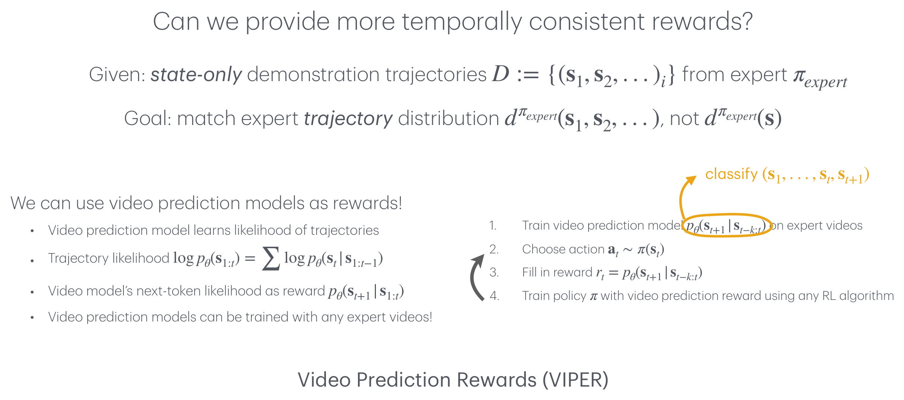
14. VIPER 결과 (VIPER Results)
14.1 네 영역의 학습 곡선
20쪽은 VIPER 논문의 학습 곡선 네 개입니다(출처: Escontrela et al., NeurIPS 2023). 제목의 괄호는 VIPER 보상과 함께 쓴 강화학습 알고리즘으로 보입니다. DrQ는 이미지 관측을 위한 모형 없는 알고리즘이고, Dv3는 11회차 12절의 DreamerV3입니다. 13절의 “아무 강화학습 알고리즘이나”가 모형 없는 방법과 모형 기반 방법 양쪽에서 확인되는 셈입니다. 범례는 Task Oracle(회색 점선), VIPER(초록), AMP(파랑), AMP Multi-Task(보라)입니다. Task Oracle은 이름으로 보아 과제의 실제 보상으로 학습한 기준선이고, AMP는 11절의 적대적 분류기 방법입니다. 세로축의 이름은 적혀 있지 않습니다. 끝 무렵의 값을 대략 읽으면 다음과 같습니다.
| 영역 (알고리즘) | 가로축 | Task Oracle | VIPER | AMP | AMP Multi-Task |
|---|---|---|---|---|---|
| DMC (DrQ) | 0–500K | 약 400 안팎 | 약 380 | — | 약 20 |
| DMC (Dv3) | 0–10M | 약 900 | 약 830 | 약 550–600 | 약 80 |
| Atari (Dv3) | 0–10M | 약 11 | 약 10–11 | 약 4–6 | — |
| RLBench (Dv3) | 0–1M | 약 0.0 | 약 0.45 | 약 0.0 | — |
- DMC와 아타리: VIPER의 초록 곡선이 Task Oracle 가까이까지 올라갑니다. 과제의 실제 보상 없이 전문가 영상만으로 학습한 보상이 실제 보상에 가까운 성능을 낸다는 것이 슬라이드의 문장 “VIPER는 픽셀로부터 거의 전문가 수준의 성능에 이른다!”(VIPER achieves near expert-level performance from pixels!)입니다.
- 적대적 방법과의 차이: AMP는 DMC (Dv3)에서 약 550–600, 아타리에서 약 4–6에 머물고, AMP Multi-Task는 DMC의 두 칸 모두에서 0 근처를 벗어나지 못합니다.
- RLBench: Task Oracle과 AMP가 모두 0 근처에 머무는 동안 VIPER만 약 0.45까지 오릅니다. 슬라이드는 이 차이의 이유를 따로 설명하지 않습니다.
슬라이드의 초록 글씨는 VIPER의 장점을 이렇게 적습니다.
+ Resolve issues in adversarial reward classifier’s overfitting/mode collapse (+ 적대적 보상 분류기의 과적합과 모드 붕괴 문제를 해결한다)
적대적 분류기는 정책의 데이터와 전문가 데이터를 너무 쉽게 갈라 버리면(과적합) 정책이 방문하는 곳에서는 0에 가까운 출력만 내 쓸모 있는 보상을 주지 못하고, 정책은 분류기를 속이는 데 성공한 일부 행동으로만 쏠릴 수 있습니다(모드 붕괴). 13.1절에서 보았듯 VIPER의 비디오 모델은 강화학습 도중 고정되어 있어 이런 최소–최대 게임이 없습니다.
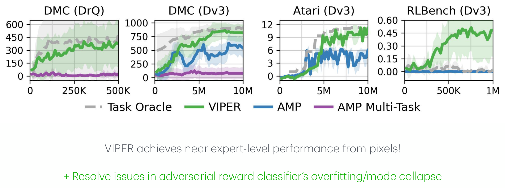
14.2 영상만 있으면 된다
21쪽은 VIPER를 적용한 세 영역의 장면을 모아 보여 줍니다. 왼쪽은 DMC의 15개 과제 장면, 오른쪽 위는 아타리 게임 다섯 장면, 오른쪽 아래는 RLBench의 로봇 팔 조작 장면 네 개입니다. 슬라이드의 문장은 다음과 같습니다.
Just need videos :) VIPER works with any domains! (영상만 있으면 된다 :) VIPER는 어떤 영역에서도 작동한다!)
보상 분류기 계열이 성공 예시나 시연을 요구했다면, VIPER가 요구하는 것은 그 영역의 전문가 영상뿐입니다. 행동 라벨도, 성공 판정 기준도, 과제별 보상 코드도 필요 없습니다.
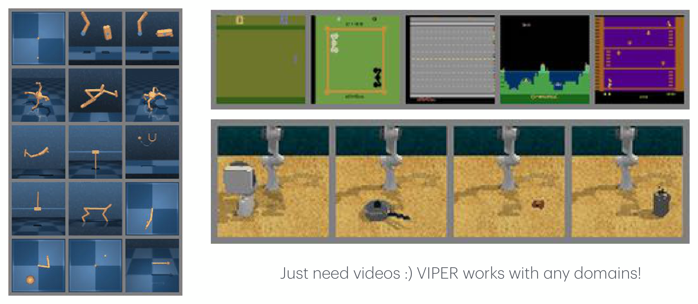
15. 요약: 보상 분류기 (Summary: Reward Classifier)
22쪽은 5–14절을 정리합니다. 슬라이드의 세 불릿은 다음과 같습니다.
- 보상 함수를 데이터로부터 배울 수 있다 (We can learn reward function from data)
- 성공 예시로 학습하는 목표 분류기 (goal classifier with success examples)
- 시연 궤적으로 학습하는 일반적인 보상 분류기 (general reward classifier with demonstration trajectories)
- 미리 학습한 분류기는 그것을 상대로 최적화하면 악용될 수 있다 (Pre-trained classifiers can be exploited when optimized against)
- 해법: 강화학습 도중 정책의 데이터를 음성 예시로 써서 분류기를 갱신한다 (Solution: update the classifier during RL, using policy data as negative)
그 아래에는 장단점이 색깔별로 붙어 있습니다.
| 표시 | 내용 | 이 포스트 |
|---|---|---|
| + (초록) | 과제를 명세하는 실용적인 틀이다 (practical framework for task specification) | 5.1절, 6절 |
| ~ (주황) | 적대적 학습은 불안정할 수 있다 — GAN의 학습 요령이 필요하다 (adversarial training can be unstable) | 7절, 14.1절 |
| − (빨강) | (목표 분류기는) 원하는 행동이 목표 도달일 때만 쓸 수 있다 (only when desired behavior is to reach a goal) | 8절 |
| − (빨강) | 원하는 행동이나 결과의 예시가 필요하다 (requires examples of desired behavior or outcomes) | 16절 |
마지막 줄의 약점, 곧 예시가 있어야 한다는 것이 다음 부분의 출발점입니다. 사람이 할 수 없는 행동이라면 시연도 없고, 결과의 예시를 미리 정하기 어려운 과제도 많습니다.
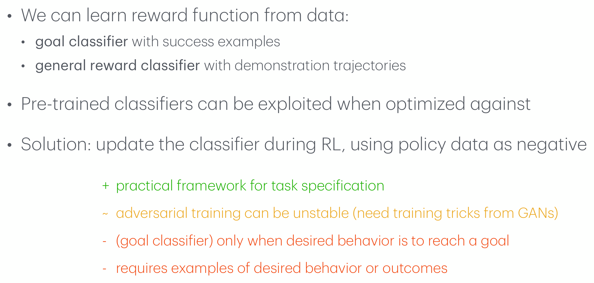
16. 정책 롤아웃에 사람이 피드백을 줄 수 있을까 (Can Humans Provide Feedback on Policy Roll-outs?)
셋째 부분의 장 구분 슬라이드(23쪽) 제목은 인간 피드백 기반 강화학습(RL from human feedback)입니다. 24쪽은 15절의 마지막 약점을 정면으로 다룹니다. 시연이나 목표 예시를 요구하는 대신(혹은 거기에 더해!) 사람이 정책의 롤아웃을 보고 피드백을 줄 수 있을까요? 슬라이드는 두 가지 방식을 비교합니다.
| 방식 | 사람에게 묻는 것 | 슬라이드의 그림 |
|---|---|---|
| 절대 점수 | “이 궤적은 얼마나 좋은가?” (How good is this trajectory?) | 궤적 하나에 점수 0.2? 0.5? 0.9? |
| 상대 비교 | “어느 궤적이 더 나은가?” (Which trajectory is better?) | 세 궤적의 순위 green < red < blue |
슬라이드의 결론은 “상대적인 선호가 주기 더 쉽다!”(Relative preferences are easier to provide!)입니다. 그 이유를 짚어 보면 다음과 같습니다.
- 절대 점수에는 일관된 눈금이 필요합니다. 0.5와 0.6의 차이가 무엇인지, 어제의 0.7과 오늘의 0.7이 같은지, 다른 사람의 0.7과 같은지를 맞추기 어렵습니다.
- 비교는 눈앞의 두 개만 보면 됩니다. 오른쪽 그림에서 별(목표)에 닿지 못한 초록 궤적이 가장 나쁘고, 별에 닿았지만 구불구불한 분홍 궤적(슬라이드 글씨로는 red)이 그다음이며, 부드럽게 별에 닿은 파랑 궤적이 가장 낫다는 판단은 숫자 없이도 바로 내릴 수 있습니다.
- 직접 할 수 없는 행동도 판정할 수 있습니다. 공중제비를 시연할 수 없는 사람도 두 영상 중 어느 쪽이 더 공중제비에 가까운지는 고를 수 있습니다. 15절의 “예시가 필요하다”는 약점을 피하는 지점입니다.
8회차 9.2절에서 RoboArena가 성공률 대신 두 정책의 쌍대 비교를 모은 것도 같은 이유였습니다.
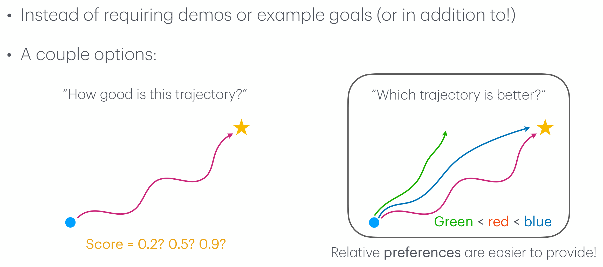
17. 사람의 선호로부터 보상 함수를 배우는 법 (How to Learn a Reward Function from Human Preferences?)
25–27쪽은 같은 제목 아래에서 선호 데이터로 보상 함수를 학습하는 방법을 한 줄씩 쌓아 올립니다.
17.1 원하는 성질: 이긴 궤적의 보상 합이 더 크다
- 사람이 \(\tau_w\)가 \(\tau_l\)보다 낫다고 말한다 (\(\tau_w \succ \tau_l\))
- 다음을 만족하는 보상 \(r_\phi\)를 원한다
\[ \sum_{(\mathbf{s}, \mathbf{a}) \sim \tau_w} r_\phi(\mathbf{s}, \mathbf{a}) \;>\; \sum_{(\mathbf{s}, \mathbf{a}) \sim \tau_l} r_\phi(\mathbf{s}, \mathbf{a}) \]
아래첨자 \(w\)와 \(l\)은 각각 이긴(win) 궤적과 진(lose) 궤적을 뜻하는 것으로 읽힙니다. 합의 아래에 적힌 \((\mathbf{s}, \mathbf{a}) \sim \tau\)는 표본 추출이 아니라 궤적 \(\tau\)에 들어 있는 상태–행동 쌍을 모두 더한다는 뜻입니다. 슬라이드는 왼쪽 합에 주황 밑줄을 긋고 “shorthand \(r_\phi(\tau_w)\)”라고 적어 줄임 표기를 정합니다.
\[ r_\phi(\tau) := \sum_{(\mathbf{s}, \mathbf{a}) \in \tau} r_\phi(\mathbf{s}, \mathbf{a}) \]
25쪽의 마지막 두 불릿이 이 문제의 성격을 말합니다.
- 사람은 어느 궤적이 더 나은지를 분류하고 있다 (Humans are classifying which trajectory is better)
- 보상도 마찬가지로 판별적이어야 한다 (Reward should be discriminative as well)
5–14절의 보상이 “성공인가 아닌가”, “전문가의 것인가 아닌가”를 가르는 분류기였다면, 여기서의 보상은 “두 궤적 중 어느 쪽이 이기는가”를 가르는 분류기입니다. 다만 부등식 그 자체는 학습 목표가 되지 못합니다. 만족하는 \(r_\phi\)가 무수히 많고, 사람의 판단에는 잡음이 있어 \(A \succ B\), \(B \succ C\), \(C \succ A\)처럼 서로 모순되는 비교가 섞일 수도 있습니다. 그래서 선호를 확률로 다룹니다.
17.2 선호를 확률로: 시그모이드와 로그 우도
26쪽은 두 줄을 더합니다.
- \(\sigma\big(r_\phi(\tau_a) - r_\phi(\tau_b)\big)\)를 \(\tau_a \succ \tau_b\)일 추정 확률로 정의할 수 있다.
- 그러면 로그 확률을 최대화하면 된다.
\[ \max_{\phi}\; \mathbb{E}_{\tau_w, \tau_l}\Big[\log \sigma\big(r_\phi(\tau_w) - r_\phi(\tau_l)\big)\Big] \]
26쪽의 식은 기댓값의 아래첨자를 \(\tau_w, \tau_l\)로 쓰면서 괄호 안은 \(\tau_a, \tau_b\)로 적었는데, 27쪽처럼 \(\tau_a = \tau_w\), \(\tau_b = \tau_l\)로 읽어야 하므로 위에서는 그렇게 고쳐 적었습니다.
이 정의가 왜 자연스러운지 네 가지로 확인해 보겠습니다.
(1) 확률로서 앞뒤가 맞습니다. \(\sigma(x) = 1 / (1 + e^{-x})\)는 0과 1 사이의 값이고 \(\sigma(-x) = 1 - \sigma(x)\)이므로
\[ P_\phi(\tau_b \succ \tau_a) = \sigma\big(r_\phi(\tau_b) - r_\phi(\tau_a)\big) = 1 - P_\phi(\tau_a \succ \tau_b) \]
입니다. 두 순서의 확률이 정확히 1로 더해집니다. 보상 합이 같으면 확률은 \(1/2\)이고, 차이가 클수록 1에 가까워집니다.
(2) Bradley–Terry 모형입니다. 분자와 분모에 \(e^{r_\phi(\tau_a)}\)를 곱하면
\[ \sigma\big(r_\phi(\tau_a) - r_\phi(\tau_b)\big) = \frac{e^{r_\phi(\tau_a)}}{e^{r_\phi(\tau_a)} + e^{r_\phi(\tau_b)}} \]
입니다. 8회차 9.2절에서 RoboArena의 쌍대 선호를 점수로 바꿀 때 본 Bradley–Terry 모형의 “실력 점수” \(s_i\) 자리에 궤적의 보상 합 \(r_\phi(\tau)\)가 들어간 것입니다. 거기서와 마찬가지로 확률이 차이에만 의존하므로, 모든 궤적의 \(r_\phi(\tau)\)에 같은 상수를 더해도 확률은 변하지 않습니다. 비교하는 궤적의 길이가 같다면 스텝마다의 보상 \(r_\phi(\mathbf{s}, \mathbf{a})\)에 같은 상수를 더해도 마찬가지이므로, 배운 보상은 비교에 쓰일 때만 의미가 있고 절대적인 높낮이에는 기준점이 없습니다. 길이가 다른 궤적을 비교하면 스텝당 상수 \(c\)가 \(r_\phi(\tau)\)를 궤적 길이에 비례해 바꾸므로 이 불변성은 깨집니다.
(3) 로지스틱 회귀입니다. 비교마다 “앞의 궤적이 이겼다”를 라벨 1로 두면, 목적함수는 입력이 두 궤적의 보상 차이인 이진 분류의 로그 우도, 곧 이진 교차 엔트로피의 부호를 바꾼 것입니다. 25쪽의 “보상도 판별적이어야 한다”가 수식으로는 이것입니다.
(4) 기울기가 “틀린 만큼” 움직입니다. 시그모이드의 도함수는
\[ \sigma'(x) = \frac{e^{-x}}{(1 + e^{-x})^2} = \sigma(x)\big(1 - \sigma(x)\big) \]
이므로 \(\frac{d}{dx}\log \sigma(x) = \sigma'(x)/\sigma(x) = 1 - \sigma(x)\)입니다. \(\Delta_\phi = r_\phi(\tau_w) - r_\phi(\tau_l)\)라 하면
\[ \nabla_\phi \log \sigma(\Delta_\phi) = \big(1 - \sigma(\Delta_\phi)\big)\, \nabla_\phi \Delta_\phi \]
\[ \nabla_\phi \Delta_\phi = \sum_{(\mathbf{s}, \mathbf{a}) \in \tau_w} \nabla_\phi r_\phi(\mathbf{s}, \mathbf{a}) - \sum_{(\mathbf{s}, \mathbf{a}) \in \tau_l} \nabla_\phi r_\phi(\mathbf{s}, \mathbf{a}) \]
입니다. 경사 상승은 이긴 궤적의 모든 스텝에서 보상을 올리고 진 궤적의 모든 스텝에서 보상을 내리며, 그 크기는 \(1 - \sigma(\Delta_\phi)\), 곧 현재 모델이 이 비교를 틀리게 예측할 확률에 비례합니다. 이미 큰 차이로 맞게 순위를 매긴 쌍은 거의 기여하지 않고, 틀리게 매긴 쌍이 학습을 이끕니다.
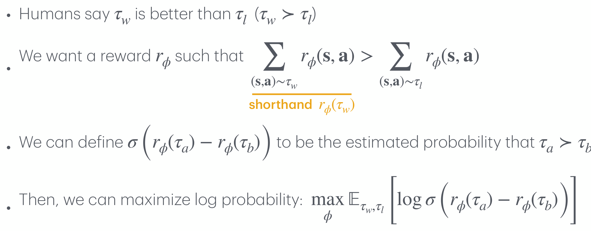
17.3 알고리즘: 순위에서 쌍으로
27쪽은 전체 절차를 네 단계로 정리합니다.
- 궤적 데이터셋 \(\{\tau_i\}\)에서 \(k\)개의 궤적을 묶음으로 뽑아 사람에게 순위를 매기게 한다.
- \(r_\phi(\tau_1), \dots, r_\phi(\tau_k)\)를 계산한다.
- 묶음마다 \({}_k C_2\)개의 모든 쌍에 대해 \(\nabla \mathbb{E}_{\tau_w, \tau_l}\big[\log \sigma\big(r_\phi(\tau_w) - r_\phi(\tau_l)\big)\big]\)를 계산한다 (순위에서 \(\tau_w\)가 \(\tau_l\)보다 위).
- 경사 상승으로 \(\phi\)를 갱신한다.
- 2로 돌아간다.
\({}_k C_2\)개의 쌍. 순위 하나는 비교 하나가 아니라 \(\binom{k}{2} = k(k-1)/2\)개의 쌍을 줍니다. 16절의 순위 green < red < blue(\(k = 3\))는 (blue ≻ red), (blue ≻ green), (red ≻ green)의 세 쌍이고, \(k = 4\)면 여섯 쌍입니다. 사람은 순위를 한 번 매길 뿐인데 학습에 쓰이는 비교는 \(k\)의 제곱에 비례해 늘어납니다. 묶음 하나의 손실은 모든 쌍의 평균입니다.
\[ \mathcal{L}(\phi) = -\frac{1}{\binom{k}{2}} \sum_{(w, l)} \log \sigma\big(r_\phi(\tau_w) - r_\phi(\tau_l)\big) \]
여기서 합은 순위에서 \(\tau_w\)가 \(\tau_l\)보다 위인 모든 쌍 \((w, l)\)에 대한 것이고, 4단계의 경사 상승은 \(-\mathcal{L}(\phi)\)를 올리는 것입니다. 슬라이드의 되돌아가는 화살표는 4단계에서 2단계로 이어지므로, 사람에게 묻는 1단계는 반복 밖에 있고 같은 순위 데이터로 2–4단계의 갱신을 여러 번 합니다. 이 방법 전체가 인간 피드백 기반 강화학습(reinforcement learning from human feedback, RLHF)입니다.
슬라이드 아래의 “Some note”는 두 가지를 덧붙입니다.
- 이 과정은 온라인 강화학습의 루프 안에서 할 수 있다 (This can be done in the loop of online RL). 정책이 바뀌면 새 궤적을 뽑아 다시 순위를 받고 보상을 갱신합니다. 5.3절에서 정책의 새 데이터로 분류기를 계속 갱신한 것과 같은 이유로, 학습된 보상의 빈틈이 메워집니다. → 18절
- 선호는 다른 모델이 제공할 수도 있다! (The preferences could be provided by another model!) → 19–20절
2회차 7.4절의 ChatBot 사례에서 보상을 “사람의 선호”로 적었고, 5회차 16절의 ChatGPT 학습 절차 둘째 단계가 비교 데이터로 보상 모델을 학습하는 것이었습니다. 그 단계의 정체가 이 알고리즘입니다.
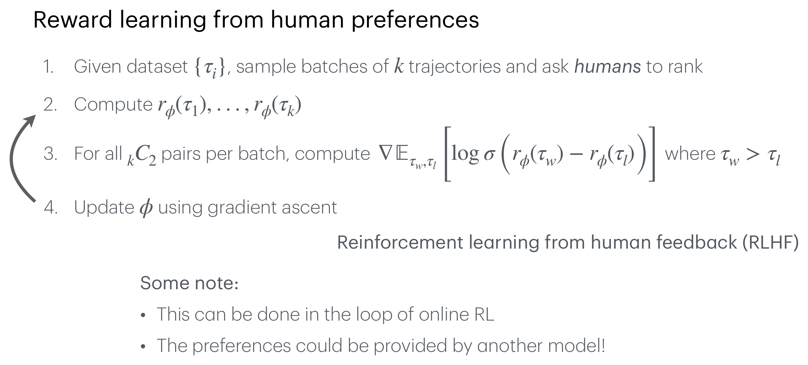
18. 인간 피드백 기반 강화학습 (RL from Human Feedback (RLHF))
18.1 보상 설계를 사람의 피드백으로 바꿀 수 있을까
28쪽의 말풍선이 물음을 던집니다.
Can we replace reward engineering with getting human feedback? 🤔 (보상 설계를 사람의 피드백을 받는 것으로 대신할 수 있을까?)
그림은 2절의 상호작용 고리에 두 요소를 끼워 넣습니다.
- 아래쪽은 그대로입니다. 에이전트가 행동을 보내고 환경이 상태를 돌려줍니다.
- 그런데 보상은 환경이 아니라 보상 모델(reward model)에서 옵니다. 환경에서 나온 궤적(그림의 필름 띠)이 보상 모델로 들어가고, 보상 모델이 에이전트에게 보상을 줍니다.
- 보상 모델을 만드는 것은 사람의 피드백입니다. 노트북 앞의 사람이 필름 띠들을 보고 좋은 것(초록 체크)과 나쁜 것(빨간 X)을 고르며, 그 피드백이 점선 화살표로 보상 모델에 들어갑니다.
여기서 보상 모델은 17절의 \(r_\phi\)입니다. 사람은 매 스텝 보상을 주지 않고 가끔 몇 개의 클립을 비교할 뿐이며, 점선 화살표는 피드백이 상호작용의 매 스텝이 아니라 띄엄띄엄 들어온다는 뜻으로 읽힙니다. 보상 모델은 그 비교들로부터 모든 상태–행동 쌍에 보상을 매기도록 일반화하고, 강화학습 알고리즘은 \(r_\phi\)를 환경의 보상처럼 쓰면 됩니다. 사람의 시간은 강화학습의 스텝 수가 아니라 질의의 수에 비례하게 됩니다.
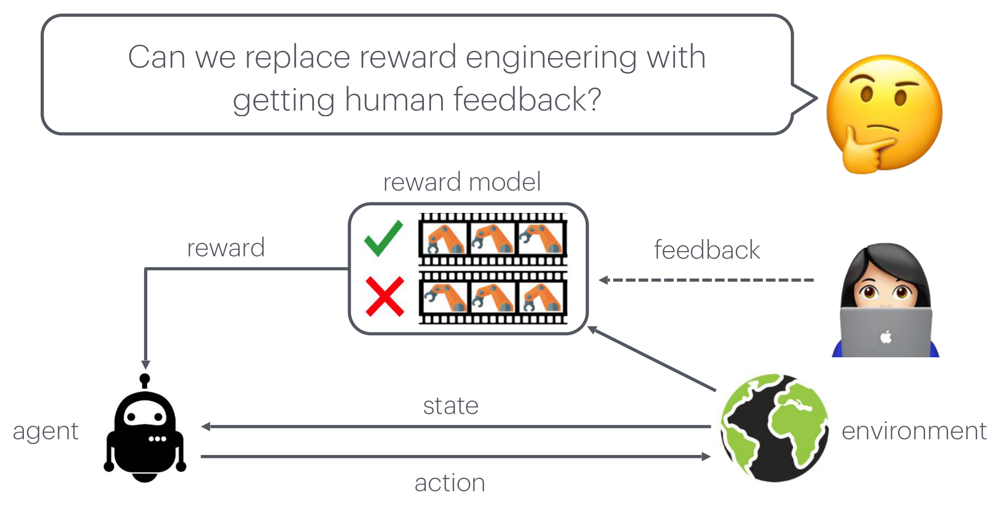
18.2 두 사례
29쪽은 RLHF의 두 사례를 나란히 놓습니다.
온라인 강화학습의 루프 안에서 보상 배우기 — 900번의 선호 질의 (Learning rewards in the loop of online RL — uses 900 human preference queries). 출처는 Christiano et al., Deep Reinforcement Learning from Human Preferences, NIPS 2017입니다. 그림은 체크무늬 바닥 위에서 몸을 크게 젖힌 채 공중에 뜬 한 다리 로봇으로, 이 연구에서 잘 알려진 예인 공중제비 장면으로 보입니다. 17.3절의 알고리즘을 정책 학습과 번갈아 돌리며, 사람은 정책이 만든 짧은 클립 쌍을 비교하는 질의에 답합니다. 슬라이드의 숫자대로라면 질의 900번이면 충분했다는 것이고, 16절에서 말한 “직접 할 수 없는 행동도 판정할 수 있다”의 실례입니다.
운전 보상에서 여러 요소의 가중치 배우기 (Learning rewards for driving to weight different factors). 출처는 Sadigh et al., Active Preference-Based Learning of Reward Functions, RSS 2017입니다. 여기서는 보상을 신경망이 아니라 다섯 요소의 가중합으로 둡니다. 범례에 따르면 \(w_1\)은 도로 경계(Road Boundary), \(w_2\)는 차선 유지(Staying within Lanes), \(w_3\)는 속도 유지(Keeping Speed), \(w_4\)는 진행 방향(Heading), \(w_5\)는 충돌 회피(Collision Avoidance)의 가중치입니다. 요소별 값을 \(f_i(\mathbf{s}, \mathbf{a})\)라 하면 보상은 다음과 같습니다. 17절에서 보상 모델의 파라미터를 \(\phi\)로 적었으므로 요소에는 다른 글자를 썼고, 여기서는 가중치 \(w_1, \dots, w_5\)가 그 파라미터 자리에 들어갑니다.
\[ r(\mathbf{s}, \mathbf{a}) = \sum_{i=1}^{5} w_i\, f_i(\mathbf{s}, \mathbf{a}) \]
선호 데이터가 쌓이면 가중치에 대한 믿음이 확률분포로 좁혀지며, 그림의 곡선이 그 분포의 확률밀도(PDF)입니다. 다섯 분포는 각각 같은 색 점선 근처에서 봉우리를 이루며, 진행 방향의 \(w_4\)는 약 0.9, 충돌 회피의 \(w_5\)는 약 −0.45에, 나머지 셋(\(w_1\), \(w_2\), \(w_3\))은 약 −0.1에서 0.2 사이에 봉우리가 있습니다. 제목의 “능동적(active)”은 어떤 궤적 쌍을 물을지를 학습자가 고른다는 뜻으로, 이 슬라이드는 그 선택 방법까지는 다루지 않습니다.
두 사례는 같은 선호 학습을 서로 다른 형태의 보상 모델에 적용합니다. 하나는 신경망 보상을 심층 강화학습과 함께 학습하고, 다른 하나는 해석할 수 있는 다섯 개의 가중치를 추정합니다.
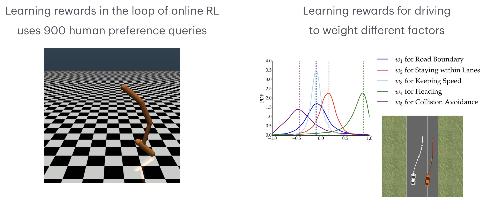
19. AI 피드백으로 보상 배우기 (Learning Rewards from Human AI Feedback)
넷째 부분의 장 구분 슬라이드(30쪽) 제목은 AI 피드백 기반 강화학습(RL from AI feedback)입니다. 31쪽의 제목은 2쪽 계획의 셋째 줄 Learning rewards from human feedback에서 “human”에 취소선을 긋고 “AI”를 덧붙여, 넷째 줄 Learning rewards from AI feedback으로 바꾸어 놓았습니다. 17.3절의 마지막 메모 “선호는 다른 모델이 제공할 수도 있다”를 실제로 해 본 것입니다.
- AI 피드백 기반 강화학습(reinforcement learning with AI feedback, RLAIF)
- 다른 언어 모델에게 “이 응답들 중 어느 것이 덜 해로운가?”를 묻는다 (Ask another language model “which of these responses is less harmful?”)
- 핵심 통찰: 비평이 생성보다 쉽다! (Key insight: critique is easier than generation!)
출처는 Bai et al., Constitutional AI: Harmlessness from AI Feedback, 2022입니다. 사람 라벨러의 자리에 언어 모델을 넣을 뿐, 선호로 보상 모델을 학습하고 그 보상으로 강화학습을 하는 17절의 나머지 절차는 그대로입니다. “비평이 생성보다 쉽다”는 16절에서 사람에게 “점수보다 비교가 쉽고, 직접 할 수 없는 행동도 판정할 수 있다”고 했던 것과 같은 비대칭입니다. 완벽한 응답을 써내지 못하는 모델도 두 응답 중 어느 쪽이 덜 해로운지는 꽤 잘 고를 수 있다면, 그 판정을 보상 학습의 신호로 쓸 수 있습니다.
그래프의 가로축은 유용성(Helpfulness) Elo, 세로축은 무해성(Harmlessness) Elo입니다. Elo 점수는 두 모델의 응답을 비교한 결과로부터 매기는 상대 점수이고, 8회차 9.2절에서 Bradley–Terry 모형과 “같은 계열의 모형”이라고 한 바로 그 점수입니다. 그래프의 요소를 읽으면 다음과 같습니다.
- Pretrained Base(빨간 X)는 왼쪽 아래, 대략 (−145, −95)에 있는 출발 모델입니다.
- Helpful-Only(파랑)는 유용성만 학습한 경로로, 유용성은 약 150까지 오르지만 무해성은 내내 음수(약 −65 – −10)에 머뭅니다.
- Helpful + Harmless(주황)는 유용성과 무해성을 함께 학습한 경로로, 약 (75, 77)까지 오른 뒤 꺾여 내려옵니다. 더 유용해지는 대가로 무해성을 잃는 맞교환입니다.
- Standard RLHF(검은 곡선)는 사람의 피드백으로 학습한 표준 RLHF가 도달하는 맞교환의 경계로 읽힙니다.
- Constitutional SL(초록 X)은 원점 근처에 있고, 여기서 출발한 두 회색 경로가 RL 단계입니다. 이름이 붙은 진한 회색 With Chain of Thought는 무해성 약 190까지, 이름이 없는 옅은 회색 경로는 약 (110, 140)까지 오릅니다. 옅은 회색은 맥락상 사고 사슬(chain of thought) 없이 학습한 경로로 보입니다.
- Constitutional RL (Pareto Improvement)(자홍 곡선)은 두 회색 경로를 감싸는 경계로, 검은 곡선보다 위쪽에 있습니다.
파레토 개선(Pareto improvement)이란 한 목표를 나쁘게 하지 않으면서 다른 목표를 좋게 만드는 것입니다. 자홍 경계가 검은 경계보다 위에 있다는 것은 비슷한 유용성에서 더 높은 무해성을 얻는다는 뜻이고, AI 피드백으로 학습한 쪽이 사람의 피드백으로 학습한 표준 RLHF의 맞교환을 넘어섰다는 것이 이 그래프의 주장입니다.
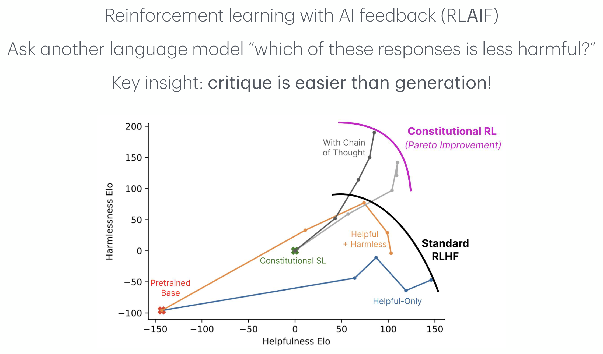
20. VLM 피드백으로 배우기 (Learning from VLM Feedback)
32쪽은 AI 피드백을 언어에서 이미지로 옮깁니다(출처: Wang et al., RL-VLM-F: Reinforcement Learning from Vision Language Foundation Model Feedback, ICML 2024). 그림은 시계 방향으로 도는 고리입니다.
- 강화학습(Reinforcement Learning): 정책이 환경과 상호작용합니다.
- 롤아웃 궤적(Rollout Trajectories): 여러 궤적이 펼쳐지고, 각 궤적의 끝 장면(분홍과 주황 천이 놓인 이미지)이 남습니다.
- 표본 추출(Sampling): 그 장면들 가운데 둘을 뽑아 관측 쌍(Sampled Observation Pair)을 만들고, 과제 설명 “Fold the cloth diagonally”(천을 대각선으로 접어라)를 함께 붙입니다.
- 비전-언어 모델(Vision Language Model): 주황 테두리로 강조된 이 단계에서, 비전-언어 모델이 두 이미지와 과제 설명을 보고 어느 쪽이 과제에 더 가까운지 판정합니다.
- 선호 라벨(Preference Label): 대각선으로 접혀 삼각형이 된 천에 초록 체크, 비뚤게 접힌 천에 빨간 X가 붙습니다.
- 보상 학습(Reward Learning) → 보상 모델(Reward Model): 선호 라벨로 보상 모델을 학습하고, 그 보상으로 다시 강화학습을 합니다.
18절의 그림과 비교하면, 노트북 앞의 사람이 있던 자리에 비전-언어 모델(VLM)이 앉았다는 것이 가장 큰 차이입니다. 6단계의 보상 학습이 17절의 선호 기반 보상 학습에 해당하는 단계로 읽힙니다. 1회차 6.8절에서 \(\pi_0\)의 백본으로 본 비전-언어 모델이 이번에는 정책이 아니라 판정자로 쓰이는 셈이고, 22절에서 정리할 RLHF의 약점, 곧 강화학습의 루프 안에서 사람의 감독이 필요할 수 있어 사람의 시간이 더 든다는 점을 덜어 줍니다. 판정의 단위가 궤적 전체가 아니라 관측 이미지 한 쌍이라는 점도 눈여겨볼 만합니다.
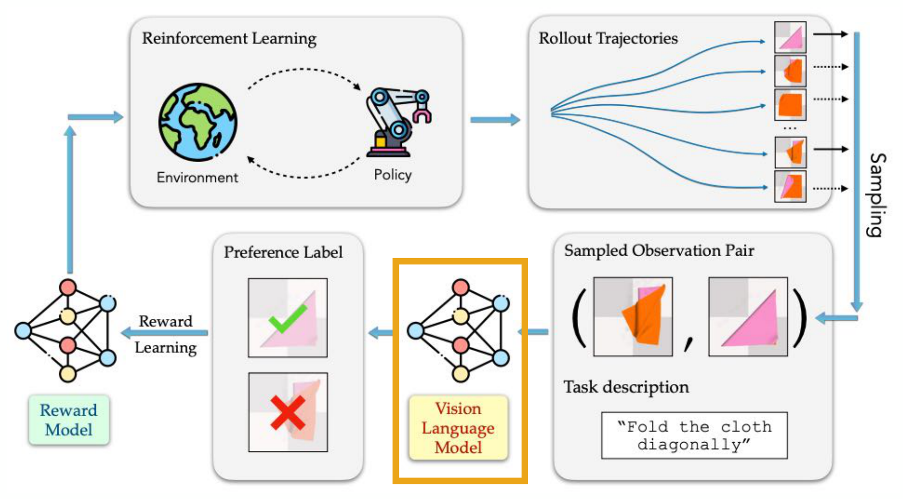
21. LLM으로 보상 함수 만들기 (Generating Reward Function Using LLM)
21.1 Eureka의 고리
33쪽은 보상을 배우는 대신 써 주는 방법입니다(출처: Ma et al., Eureka: Human-Level Reward Design via Coding Large Language Models, ICLR 2024). 3절에서 사람이 손으로 짜던 보상 코드를 대규모 언어 모델(LLM)이 짭니다. 그림의 흐름은 다음과 같습니다.
입력: 환경 코드(Environment Code)와 과제 설명(Task Description)입니다. 환경 코드는
ShadowHandPenSpin클래스의 관측 계산 부분으로, 물체(펜)의 자세·위치·회전·선속도·각속도(obj_pose,obj_pos,obj_rot,obj_linvel,obj_angvel), 목표 자세(tgt_pose,tgt_pos,tgt_rot), 손가락 끝의 상태(fingertip_state,fingertip_pos)를 정의합니다. 과제 설명은 “To make the shadow hand spin the pen to a target orientation”(섀도 핸드가 펜을 목표 방향으로 돌리게 하라)입니다.코딩 LLM (GPT 4): 두 입력을 받아 보상 후보를 샘플링합니다(Reward Candidate Sampling). 그림의 후보는
compute_reward(obj_rot, obj_angvel, ...)함수이고, 그 안에 “Angular velocity penalty”라는 주석과 함께 각속도의 크기av_norm = torch.norm(obj_angvel)이 2를 넘으면torch.exp(av_norm - 2.0)을 벌점으로 두는 줄이 보입니다.\[ \mathtt{av\_penalty} = \exp\big(\lVert \boldsymbol{\omega} \rVert - 2\big) \qquad (\lVert \boldsymbol{\omega} \rVert > 2) \]
여기서 \(\boldsymbol{\omega}\)는 펜의 각속도이며, 2 이하일 때의 값은 그림에서 생략되어 있습니다.
GPU 가속 강화학습(GPU-Accelerated RL): 후보 보상마다 Isaac Gym에서 정책을 학습합니다. 그림 오른쪽 아래가 수많은 손이 동시에 펜을 돌리는 병렬 시뮬레이션 장면입니다.
보상 성찰(Reward Reflection): 학습 결과를 글로 요약해 LLM에게 돌려줍니다. 그림의 요약문은 “제공된 보상 함수 코드로 강화학습 정책을 학습했다”로 시작해, 학습 중 기록된 보상 성분
av_penalty의 값['0.02', '0.05', '0.05', '0.04', '0.03', ...]과success_rate의 값['0.00', '0.38', '1.57', '3.01', '3.95', ...]을 적은 뒤 “정책 피드백을 주의 깊게 분석해 새롭고 개선된 보상 함수를 달라”고 요청합니다.success_rate에 1을 넘는 값이 있어 비율이라기보다 에피소드당 성공 횟수에 가까운 지표로 보이지만, 슬라이드는 정의를 밝히지 않습니다.피드백과 함께 다시 묻기(Query with Feedback): 이 요약을 받은 LLM이 보상 코드를 고쳐 쓰고, 고리가 반복됩니다.
5–20절의 방법들이 보상을 \(C_\psi\), \(p_\theta\), \(r_\phi\) 같은 학습된 함수의 파라미터로 배웠다면, Eureka가 내놓는 보상은 읽을 수 있는 코드이고, 학습 신호는 예시나 선호가 아니라 “이 보상으로 학습한 정책이 실제로 얼마나 성공했는가”입니다. 3절의 HalfCheetah와 LunarLander 코드를 쓴 사람이 하던 일 — 보상을 짜 보고, 학습시켜 보고, 결과를 보고 상수를 고치는 일 — 을 그대로 자동화한 셈입니다.
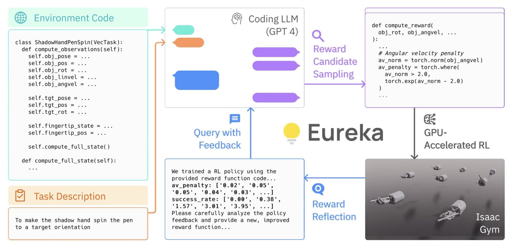
21.2 펜 돌리기
34쪽은 같은 제목 아래 영상 한 장면입니다. 어두운 배경에서 흰색 로봇 손이 손가락 사이에 은색 펜을 끼고 있습니다. 슬라이드에 설명은 없지만, 33쪽의 과제 설명대로 Eureka가 만든 보상으로 학습한 펜 돌리기 장면으로 보입니다.
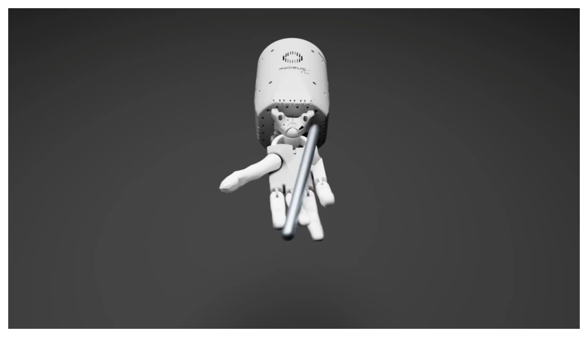
22. 보상 학습 요약 (Summary of Reward Learning)
마지막 슬라이드는 한 문장의 결론과 두 갈래의 장단점입니다.
#1 Takeaway: Rewards can’t be taken for granted! (가장 중요한 교훈: 보상은 당연히 주어지는 것이 아니다!)
| 목표와 시연으로부터 보상 배우기 (Learning reward from goals & demos) | 사람의 선호로부터 보상 배우기 (Learning rewards from human preferences) | |
|---|---|---|
| + | 과제를 명세하는 실용적인 틀이다 | 쌍대 선호는 주기 쉽다 — 목표도 시연도 필요 없다 |
| + | — | 대규모로 배포된 적이 있다! (예: ChatGPT) |
| ~ | 적대적 학습은 불안정할 수 있다 — GAN의 학습 요령이 필요하다 | — |
| − | (목표 분류기는) 원하는 행동이 목표 도달일 때만 쓸 수 있다 | 강화학습의 루프 안에서 감독이 필요할 수 있다 — 사람의 시간이 더 든다 |
| − | 원하는 행동이나 결과의 예시가 필요하다 | — |
왼쪽 열은 15절의 요약을 그대로 옮긴 것이고, 오른쪽 열은 16–18절의 내용입니다. 선호의 “+”는 15절의 마지막 약점(예시가 필요하다)을 정확히 메우고, 그 대가로 “−”가 생깁니다. 17.3절의 메모처럼 학습된 보상의 빈틈을 메우려면 정책이 바뀔 때마다 새 궤적에 다시 선호를 받아야 하고, 그만큼 사람의 시간이 듭니다. 요약 슬라이드에는 따로 적혀 있지 않지만, 19–21절의 AI 피드백과 LLM이 쓰는 보상은 바로 이 마지막 약점을 줄이려는 시도로 읽을 수 있습니다.
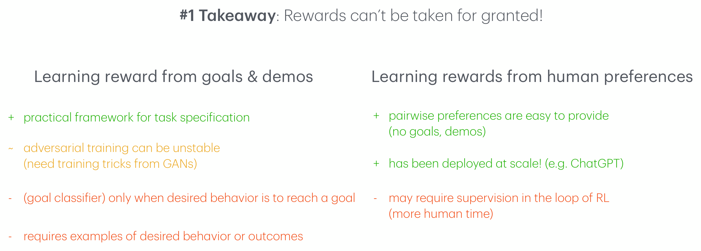
정리하며 (Closing Remarks)
이번 강의의 논리 사슬을 한 장으로 요약하면 다음과 같습니다.
| 단계 | 내용 | 근거 |
|---|---|---|
| ① 보상은 주어지지 않는다 | 모형 없는 방법도 매 스텝의 \(r_t\)는 환경이 준다고 가정했지만, 시뮬레이션의 보상은 사람이 짠 코드(HalfCheetah 3줄, LunarLander 9개의 상수)이고 실세계 과제에는 그런 코드가 없어 대리 보상에 기대게 된다 | 2–4.1절 |
| ② 행동 대신 의도 | 직접 모방은 결과를 추론하지 않고, 자유도가 다르면 옮길 수 없으며, 시연이 불가능할 수 있다. 전문가가 이루려는 것을 보상으로 읽어 내면 에이전트는 자기 몸으로 강화학습을 할 수 있다 | 4.2절 |
| ③ 목표 분류기와 그 함정 | 성공 예시로 학습한 이진 분류기의 출력을 보상으로 쓰면, 강화학습은 분류기가 학습하지 않은 상태에서 높은 값을 내는 빈틈을 찾아간다 | 5.1–5.2절 |
| ④ 방문한 상태를 음성 예시로 | 정책이 방문한 상태를 계속 음성 예시로 보태면 빈틈이 메워진다. 균형 배치에서 최적 분류기는 \(p_+/(p_+ + p_-)\)이고, 방문한 성공 상태가 성공 예시처럼 분포하면 성공 상태에서 \(1/(1+\rho) \ge 1/2\), 음성 예시에 든 실패 상태에서 0이다. 실제 로봇에서는 시연 50개의 마지막 상태를 성공 예시로 쓴 분류기 보상의 강화학습이 직접 모방(26%)보다 높은 62%의 성공률을 냈다 | 5.3–6절 |
| ⑤ GAN과의 대응 | 정책은 생성기, 목표 분류기는 판별기에 대응하고, 최적 분류기 아래 목적함수는 \(2\,\mathrm{JSD} - \log 4\)가 되어 수렴점에서 정책의 분포가 성공 예시의 분포와 같아진다. 환경이 미분할 수 없으므로 기울기 대신 보상으로 푼다 | 7절 |
| ⑥ 상태–행동 쌍: GAIL | 시연의 \((\mathbf{s}, \mathbf{a})\)를 분류해 결합 분포 \(d^{\pi}(\mathbf{s}, \mathbf{a})\)를 맞추면 상태 분포와 행동 선택이 함께 맞춰지며, 조건부 분포만 맞추는 행동 복제보다 시연 효율적이지만 환경과의 상호작용이 필요하다 | 8–9절 |
| ⑦ 상태 전이: GAIfO | 행동이 없는 시연에서는 \((\mathbf{s}, \mathbf{s}')\)를 분류한다. 전이 분포를 맞추면 상태 분포가 따라오고, 행동의 효과를 볼 수 있으며, 모션 클립과 휴머노이드로 이어진다 | 10–12절 |
| ⑧ 궤적 우도: VIPER | 전문가 영상으로 학습한 비디오 예측 모델의 다음 상태 우도를 보상으로 쓰면, 로그를 취할 때 반환값의 최대화가 궤적의 로그 우도의 최대화와 같아진다. 모델이 고정되어 적대적 학습의 문제를 피하고, 영상만 있으면 된다 | 13–14절 |
| ⑨ 보상 분류기의 한계 | 실용적이지만 적대적 학습은 불안정하고, 목표 분류기는 목표 도달 과제에만 쓰이며, 원하는 행동이나 결과의 예시가 필요하다 | 15절 |
| ⑩ 점수보다 비교 | 사람에게 절대 점수 대신 어느 궤적이 나은지를 물으면 일관된 눈금이 필요 없고, 직접 할 수 없는 행동도 판정할 수 있다 | 16절 |
| ⑪ 선호의 확률과 학습 | \(P(\tau_w \succ \tau_l) = \sigma\big(r_\phi(\tau_w) - r_\phi(\tau_l)\big)\)는 Bradley–Terry 모형이고, 로그 우도의 기울기는 틀릴 확률 \(1 - \sigma\)에 비례한다. 순위 하나가 \({}_k C_2\)개의 쌍을 준다 | 17절 |
| ⑫ RLHF | 사람의 비교로 학습한 보상 모델이 환경 대신 보상을 주며, 900번의 질의로 배운 신경망 보상과 다섯 가중치의 운전 보상이 그 예다 | 18절 |
| ⑬ AI 피드백 | 비평이 생성보다 쉽다는 비대칭을 이용해 언어 모델(RLAIF)이나 비전-언어 모델(RL-VLM-F)이 선호를 판정하며, Constitutional RL은 표준 RLHF의 맞교환 경계를 넘어선다 | 19–20절 |
| ⑭ LLM이 쓰는 보상 | Eureka는 환경 코드와 과제 설명으로 보상 코드를 쓰고, 그 보상으로 학습한 결과를 요약해 다시 고쳐 쓰게 해 사람의 보상 설계 과정을 자동화한다 | 21절 |
| ⑮ 결론 | 보상은 당연히 주어지는 것이 아니다. 예시로 배우는 방법은 예시가 필요하고, 선호로 배우는 방법은 사람의 시간이 필요하다 | 22절 |